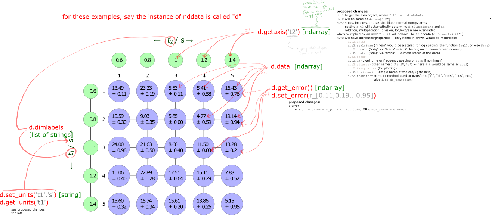
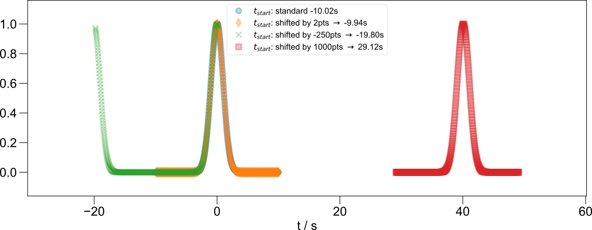
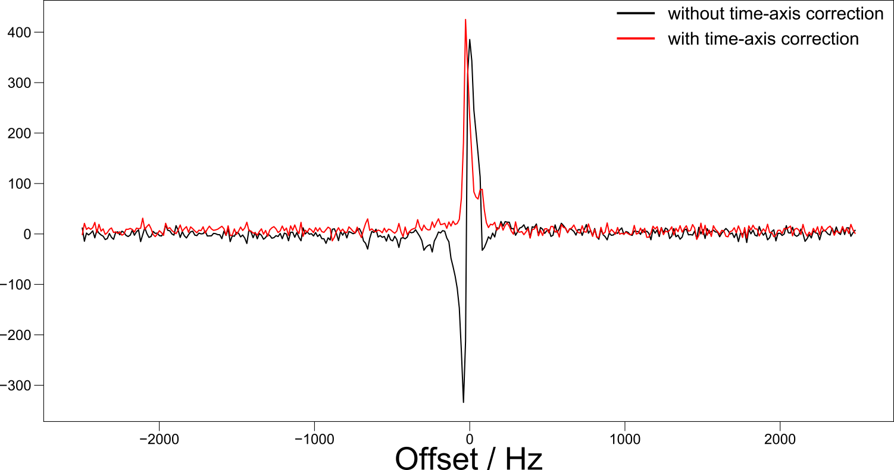
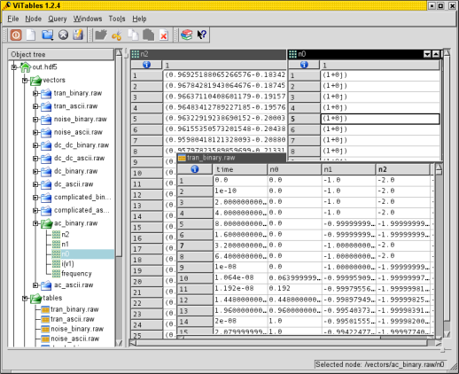
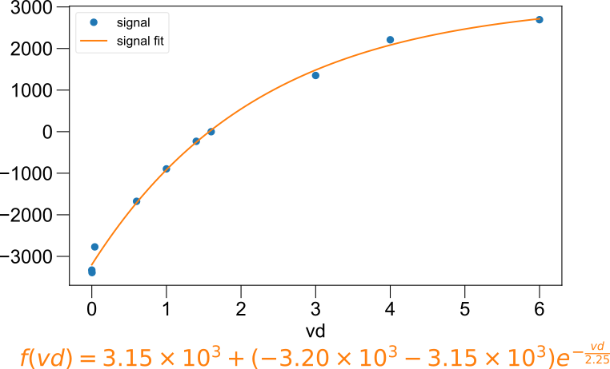

pyspecdata package¶
Subpackages¶
- pyspecdata.axis_manipulation package
- pyspecdata.fourier package
- pyspecdata.load_files package
- Submodules
- pyspecdata.load_files.acert module
- pyspecdata.load_files.bruker_esr module
- pyspecdata.load_files.bruker_nmr module
- pyspecdata.load_files.ciqtek module
- pyspecdata.load_files.load_cary module
- pyspecdata.load_files.open_subpath module
- pyspecdata.load_files.prospa module
- pyspecdata.load_files.zenodo module
- Module contents
- pyspecdata.matrix_math package
- pyspecdata.plot_funcs package
Submodules¶
pyspecdata.axis_class module¶
- class pyspecdata.axis_class.axis_collection(dimlabels)
Bases:
objectA collection of
axisobjects.Designed so that an instance of axis_collection is an attribute of nddata called axes, which behaves like a dictionary whose keys are the dimlabels of the nddata object, and whose values are
axisobjects.Used to make sure that no axis names or aliases are duplicated.
You can add axes to the collection in any of the following ways, where example_nddata is an nddata instance. (Remember that all nddata instances have an attribute axes of type axis_collection).
- building a new axis
example_nddata.axes[‘t2’] = ax_[0:1.2:100j] or example_nddata.axes[‘t2’] = ax_[0:1.2:0.01] (uses the same notation as numpy r_[…])
this takes the place of labels or set_axis in old versions of pyspecdata.
- associating an existing axis
example_nddata.axes += existing_axis existing_axis must have a name or alias that matches one of example_nddata.dimlabels.
- dimlabels
This is the same dimlabels attribute as the instance of the parent class.
- Type:
list
- names_used
Stores a list of all the names and aliases used by the axis objects that are contained in the collection, as well as the axes for any conjugate domains. since these need to be unique.
This is simply ChainMap(ax1.references,ax2.references,…,etc.)
- Type:
ChainMap
- rename(oldname, newname)
Rename an axis. If oldname is the preferred name of the axis, also go into dimlabels, and change the name (since dimlabels is the same list used by the nddata that contains the collection, it will update the dimlabel there as well)
- class pyspecdata.axis_class.nddata_axis(*args)
Bases:
objectThe axis that gives the list of coordinates along a particular dimension.
Todo
There is no actual code here – this is a proposal for the new axis class
Internally uses the minimum number of variables to store information about the axis.
Also includes information about the chosen location (alias) in infinitely periodic domains. This is analogous to the concept of using fftshift in matlab or traditional numpy, but more general.
The nddata_axis has overloading routines to deal with the following operations like a standard numpy array (example_axis below is an instance of nddata_axis)
- indexing
>>> retval = example_axis[1]
returns the second value along the axis
- slicing
>>> retval = example_axis[0:20:5]
returns every fifth value from zero up to, but not including, 20
- nddata-like slicing
>>> retval = example_axis[(0,5.5)]
returns everything where the values of the axis coordinates are between 0 and 5.5 (inclusive)
>>> retval = example_axis[(0,None)]
returns everything where the values of the axis coordinates are 0 (inclusive) or above
- multiplication
>>> retval = example_axis * b
or
>>> retval = b * example_axis
- if
bis a numpy array will return another numpy array
- if
bis an nddata will return another nddata – note that this replaces the previous use of
fromaxis.
- if
- addition + subtraction + division
same rules as multiplication
- argument of a function
>>> retval = exp(example_axis)
(or
sin,cos, etc.) returns another axis object. Note that this just amounts to setting the transf_func attribute, below.If
self.multiplieris set to a complex number, specialized routines are always used (e.g.expcan be calculated more efficiently, etc.)- interpolation (
@) >>> retval = b @ example_axis
Here,
bmust be an nddata, andexample_axismust have anamematching one of the dimension labels ofb.retvalwill consist ofbinterpolated onto the new axis.Note that while
@is typically used for matrix multiplication, it is NOT here.
- size
the length of the axis
- Type:
long
- dx
Step size multiplying the base array. For a non-uniform array, if possible, divide by the smallest step size, then multiply by a number that will convert the resulting floats to integers.
- Type:
float
- start
determines the starting value of the axis: >>> self.start+self.dx*r_[0:self.size]
- Type:
float
- names
Names for this dimension that this axis is used to label, in order of preference. The first name is the “preferred” name, and all subsequent names are “aliases”. For example, you might want to have a nicely named \(B_0\) (stored as
$B_0$or a sympy variable) to describe your axis- Type:
list of strings or sympy variables
- domains
The keys correspond to a list of allowed transformations. Currently these are (future plans for
(I)LT,(I)NUS,(I)Wavelet)'FT''IFT'
These are the names of transformations that have previously been applied (or can be applied, though the list doesn’t need to be comprehensive in that case) to the
nddataobject that thenddata_axisis being used to label.I...must always stand for “inverse”; on application of a transformation, the newaxisobject that is generated must have a domains attribute with the opposite (Iremoved or added) transformation listed.The values are axis objects that label the data in the conjugate domains (after the transformation has been applied).
For example, on application of the nddata
nddata.ft()method, the data will be labeled with an axis that has a domains attribute with a key containing IFT. The value of that key will point to the axis object of the data before transformation, and will be used in the even of a call tonddata.ift().This makes the get_ft_props and set_ft_props of older versions of nddata obsolete.
- Type:
OrderedDict
- multiplier
this is only used in the event that the axis is subjected to arithmetic involving a complex number it changes the way that the axis acts as an argument to various functions (especially exp)
- Type:
complex, default None
- transf_func
this and following attributes pertain only to non-uniform (non-linear) axes a function that is applied to a uniformly spaced axis to achieve non-uniform spacing (for example, an axis with log10 spacing). If this is set, the axis is constructed as
>>> self.transf_func(self.start+self.dx*r_[0:self.size])
- Type:
function or (default) None
- uneven_steps
if this attribute exists, it must be an array of length self.size and determines the axis values as follows: self.offset+self.dx*cumsum(self.uneven_steps)
- Type:
int or float (default non-existent)
- uneven_step_coords
if self.uneven_steps exists, this stores the value of cumsum(self.uneven_steps)
- property references
returns OrderedDict of all names and aliases such that keys all point to the current instance (self)
the idea is that this should be placed in a ChainMap object to be used by the
axis_collectionclass that contains the axis.
- to_array()
returns the axis as a standard numpy array
pyspecdata.core module¶
Provides the core components of pyspecdata. Currently, this is a very large file that we will slowly break down into separate modules or packages.
The classes nddata, nddata_hdf, ndshape, the
function plot(), and the class fitdata
are the core components of the N-Dimensional processing routines.
Start by familiarizing yourself with those.
The figlist is the base class for “Figure lists.”
Figure lists allows you to organize plots and text and to refer to plots
by name, rather than number.
They are designed so that same code can be used seamlessly from within
ipython, jupyter, a python script, or a python environment within latex
(JMF can also distribute latex code for this – nice python based
installer is planned).
The user does not initialize the figlist class directly,
but rather initializes figlist_var.
At the end of this file,
there is a snippet of code that sets
figlist_var to choice that’s appropriate for the working environment
(i.e., python, latex environment, etc.)
There are many helper and utility functions that need to be sorted an
documented by JMF,
and can be ignored.
These are somewhat wide-ranging in nature.
For example, box_muller() is a helper function (based on numerical
recipes) used by nddata.add_noise(),
while h5 functions are helper functions for using pytables in a fashion that
will hopefull be intuitive to those familiar with SQL, etc.
- pyspecdata.core.apply_oom(average_oom, numbers, prev_label='')
scale numbers by the order of magnitude average_oom and change the name of the units by adding the appropriate SI prefix
- Parameters:
average_oom (int or float) – the average order of magnitude to use
numbers (np.ndarray) – The numbers to be scaled by average_oom. The np.array is modified in-place.
prev_label (str) – a string representing the units
- Returns:
new_label – prev_label is prefixed by the appropriate SI prefix
- Return type:
str
- pyspecdata.core.concat(datalist, dimname, chop=False)
concatenate multiple datasets together along a new dimension.
- Parameters:
datalist (list of nddata) – the data you want to concatenate – they must have the same ndshape!
dimname (str) – name of the new dimension
- pyspecdata.core.det_oom(data_to_test)
determine the average order of magnitude – for prefixing units
- Parameters:
data_to_test (ndarray) – a numpy array (e.g. the result of a .getaxis( call
- Returns:
average_oom – the average order of magnitude, rounded to the nearest multiple of 3
- Return type:
int
- pyspecdata.core.emptyfunction()
- class pyspecdata.core.fitdata(*args, **kwargs)
Bases:
nddataInherits from an nddata and enables curve fitting through use of a sympy expression.
The user creates a fitdata class object from an existing nddata class object, and on this fitdata object can define the
functional_form()of the curve it would like to fit to the data of the original nddata. This functional form must be provided as a sympy expression, with one of its variables matching the name of the dimension that the user would like to fit to. The user provides fit coefficients usingfit_coeff()and obtains output usingfit()andeval().If you haven’t done this before, create a jupyter notebook (not checked in, just for your own playing around) with:
` import sympy as s s.init_printing() `you can then use s.symbols( to create symbols/variables that allow you to build the mathematical expression for your fitting function- add_inactive_p(p)
- analytical_covariance()
Not up to date
- bootstrap(points, swap_out=np.float64(0.36787944117144233), minbounds={}, maxbounds={})
- copy()
Return a full copy of this instance.
Because methods typically change the data in place, you might want to use this frequently.
- Parameters:
data (boolean) –
Default to True. False doesn’t copy the data – this is for internal use, e.g. when you want to copy all the metadata and perform a calculation on the data.
The code for this also provides the definitive list of the nddata metadata.
- covar(*names)
give the covariance for the different symbols
- covarmat(*names)
- eval(taxis, set_what=None, set_to=None)
calculate the fit function along the axis taxis.
- Parameters:
taxis (ndarray, int) –
- if ndarray:
the new axis coordinates along which we want to calculate the fit.
- if int:
number of evenly spaced points along the t-axis along the fit
set_what ('str', optional) – forcibly sets a specific symbol
set_to (double, optional) – the specific value (int) you are assigning the symbol you included
- Returns:
self – the fit function evaluated along the axis coordinates that were passed
- Return type:
- fit(set_what=None, set_to=None, force_analytical=False)
actually run the fit
- fitfunc(p, x)
This is the function that does the actual fitting, and takes a properly ordered list of parameters as well as an np.ndarray for the x axis.
- property function_string
A property of the fitdata class which stores a string output of the functional form of the desired fit expression provided in func:functional_form in LaTeX format
- property functional_form
A property of the fitdata class which is set by the user, takes as input a sympy expression of the desired fit expression
- gen_indices(this_set, set_to)
pass this this_set and this_set_to parameters, and it will return: indices,values,mask indices –> gives the indices that are forced values –> the values they are forced to mask –> p[mask] are actually active in the fit
- guess(use_pseudoinverse=False)
old code that I am preserving here – provide the guess for our parameters; by default, based on pseudoinverse
- latex()
show the latex string for the function, with all the symbols substituted by their values
- linear(*args, **kwargs)
return the linear-form function, either smoothly along the fit function, or on the raw data, depending on whether or not the taxis argument is given can take optional arguments and pass them on to eval
- makereal()
- output(*name)
give the fit value of a particular symbol, or a dictionary of all values.
- Parameters:
name (str (optional)) – name of the symbol. If no name is passed, then output returns a dictionary of the resulting values.
- Returns:
retval – Either a dictionary of all the values, or the value itself.
- Return type:
dict or float
- parameter_derivatives(xvals, set=None, set_to=None)
return a matrix containing derivatives of the parameters, can set dict set, or keys set, vals set_to
- pinv(*args, **kwargs)
- remove_inactive_p(p)
- rename(previous, new)
- residual(p, x, y, sigma)
just the residual (error) function
- set_guess(dict_of_values)
sets parameters to guess/estimated value to compare fit.
- Parameters:
dict_of_values (dict) – dictionary of values set to parameters in fit equation. Allows for the setting of multiple variables depending on what’s defined in this dictionary. The keys of the dictionary must be sympy symbols
- Returns:
self – The modified nddata
- Return type:
- set_to_guess()
a debugging function, to easily plot the initial guess
- settoguess()
- pyspecdata.core.issympy(x)
tests if something is sympy (based on the module name)
- pyspecdata.core.lrecordarray(*x, **kwargs)
- pyspecdata.core.lsafe(*string, **kwargs)
replacement for normal lsafe – no escaping
- pyspecdata.core.make_bar_graph_indices(mystructarray, list_of_text_fields, recursion_depth=0, spacing=0.1)
This is a recursive function that is used as part of textlabel_bargraph; it does NOT work without the sorting given at the beginning of that function
- pyspecdata.core.maprep(*mylist)
- pyspecdata.core.mydiff(data, axis=-1)
this will replace np.diff with a version that has the same number of indices, with the last being the copy of the first
- class pyspecdata.core.nddata(*args, **kwargs)
Bases:
objectThis is the detailed API reference. For an introduction on how to use ND-Data, see the Main ND-Data Documentation.

This annotated diagram highlights the attributes stored within an
nddatainstance and how they can be accessed.¶- property C
shortcut for copy
btw, what we are doing is analogous to a ruby function with functioname!() modify result, and we can use the “out” keyword in numpy.
- ..todo::
(new idea) This should just set a flag that says “Do not allow this data to be substituted in place,” so that if something goes to edit the data in place, it instead first makes a copy.
also here, see Definition of shallow and deep copy
(older idea) We should offer “N”, which generates something like a copy, but which is sets the equivalent of “nopop”. For example, currently, you need to do something like
d.C.argmax('t2'), which is very inefficient, since it copies the whole np.array. So, instead, we should dod.N.argmax('t2'), which tells argmax and all other functions not to overwrite “self” but to return a new object. This would cause things like “run_nopop” to become obsolete.
- add_noise(intensity)
Add Gaussian (box-muller) noise to the data.
- Parameters:
intensity (double OR function) – If a double, gives the standard deviation of the noise. If a function, used to calculate the standard deviation of the noise from the data: e.g.
lambda x: max(abs(x))/10.
- aligndata(arg)
This is a fundamental method used by all of the arithmetic operations. It uses the dimension labels of self (the current instance) and arg (an nddata passed to this method) to generate two corresponding output nddatas that I refer to here, respectively, as A and B. A and B have dimensions that are “aligned” – that is, they are identical except for singleton dimensions (note that numpy automatically tiles singleton dimensions). Regardless of how the dimensions of self.data and arg.data (the underlying numpy data) were ordered, A.data and B.data are now ordered identically, where dimensions with the same label (.dimlabel) correspond to the same numpy index. This allows you do do math.
Note that, currently, both A and B are given a full set of axis labels, even for singleton dimensions. This is because we’re assuming you’re going to do math with them, and that the singleton dimensions will be expanded.
- Parameters:
arg (nddata or np.ndarray) – The nddata that you want to align to self. If arg is an np.ndarray, it will try to match dimensions to self based on the length of the dimension. Note: currently there is an issue where this will only really work for 1D data, since it first makes an nddata instance based on arg, which apparently collapses multi-D data to 1D data.
- Returns:
A (nddata) – realigned version of self
B (nddata) – realigned version of arg (the argument)
- along(dimname, rename_redundant=None)
Specifies the dimension for the next matrix multiplication (represents the rows/columns).
- Parameters:
dimname (str) –
The next time matrix multiplication is called, ‘dimname’ will be summed over. That is, dimname will become the columns position if this is the first matrix.
If along is not called for the second matrix, dimname will also take the position of rows for that matrix!
rename_redundant (tuple of str or (default) None) –
If you are multiplying two different matrices, then it is only sensible that before the multiplication, you should identify the dimension representing the row space of the right matrix and the column space of the left matrix with different names.
However sometimes (e.g. constructing projection matrices) you may want to start with two matrices where both the row space of the right matrix and the column space of the left have the same name. If so, you will want to rename the column space of the resulting matrix – then you pass
rename_redundant=('orig name','new name')
- property angle
Return the angle component of the data.
This has error, which is calculated even if there is no error in the original data – in the latter case, a uniform error of 1 is assumed. (This is desirable since phase is a tricky beast!)
- argmax(*axes, **kwargs)
If .argmax(‘dimname’) find the max along a particular dimension, and get rid of that dimension, replacing it with the coordinate where the max value is found.
If .argmax(): return a dictionary giving the coordinates of the overall maximum point.
- Parameters:
raw_index (bool) – Return the raw (np.ndarray) numerical index, rather than the corresponding axis value. Note that the result returned is still, however, an nddata (rather than numpy np.ndarray) object.
- argmin(*axes, **kwargs)
If .argmin(‘dimname’) find the min along a particular dimension, and get rid of that dimension, replacing it with the coordinate where the min value is found.
If .argmin(): return a dictionary giving the coordinates of the overall minimum point.
- Parameters:
raw_index (bool) – Return the raw (np.ndarray) numerical index, rather than the corresponding axis value. Note that the result returned is still, however, an nddata (rather than numpy np.ndarray) object.
- axis(axisname)
returns a 1-D axis for further manipulation
- axlen(axis)
return the size (length) of an axis, by name
- Parameters:
axis (str) – name of the axis whos length you are interested in
- axn(axis)
Return the index number for the axis with the name “axis”
This is used by many other methods. As a simple example, self.:func:axlen`(axis) (the axis length) returns ``np.shape(self.data)[self.axn(axis)]`
- Parameters:
axis (str) – name of the axis
- cdf(normalized=True, max_bins=500)
calculate the Cumulative Distribution Function for the data along axis_name
only for 1D data right now
- Returns:
A new nddata object with an axis labeled values, and data
corresponding to the CDF.
- check_axis_coords_errors()
- chunk(axisin, *otherargs)
“Chunking” is defined here to be the opposite of taking a direct product, increasing the number of dimensions by the inverse of the process by which taking a direct product decreases the number of dimensions. This function chunks axisin into multiple new axes arguments:
- axesout
gives the names of the output axes
- shapesout
optional – if not given, it assumes equal length – if given, one of the values can be -1, which is assumed length
When there are axes, it assumes that the axes of the new dimensions are nested – e.g., it will chunk a dimension with axis: [1,2,3,4,5,6,7,8,9,10] into dimensions with axes: [0,1,2,3,4], [1,6]
- ..todo::
Deal with this efficiently when we move to new-style axes
- chunk_auto(axis_name, which_field=None, dimname=None)
assuming that axis “axis_name” is currently labeled with a structured np.array, choose one field (“which_field”) of that structured np.array to generate a new dimension Note that for now, by definition, no error is allowed on the axes. However, once I upgrade to using structured arrays to handle axis and data errors, I will want to deal with that appropriately here.
- circshift(axis, amount)
- contiguous(lambdafunc, axis=None, return_idx=False)
Return contiguous blocks that satisfy the condition given by lambdafunc
this function returns the start and stop positions along the axis for the contiguous blocks for which lambdafunc returns true Currently only supported for 1D data
Note
- adapted from
stackexchange post http://stackoverflow.com/questions/4494404/find-large-number-of-consecutive-values-fulfilling-condition-in-a-numpy-array
- Parameters:
lambdafunc (types.FunctionType) – If only one argument (lambdafunc) is given, then lambdafunc is a function that accepts a copy of the current nddata object (self) as the argument. If two arguments are given, the second is axis, and lambdafunc has two arguments, self and the value of axis.
axis ({None,str}) – the name of the axis along which you want to find contiguous blocks
- Returns:
retval – An \(N\times 2\) matrix, where the \(N\) rows correspond to pairs of axis label that give ranges over which lambdafunc evaluates to True. These are ordered according to descending range width.
- Return type:
np.ndarray
Examples
sum_for_contiguous = abs(forplot).mean('t1') fl.next("test contiguous") forplot = sum_for_contiguous.copy().set_error(None) fl.plot(forplot,alpha = 0.25,linewidth = 3) print("this is what the max looks like",0.5*sum_for_contiguous.\ set_error(None).runcopy(max,'t2')) print(sum_for_contiguous > 0.5*sum_for_contiguous.\ runcopy(max,'t2')) retval = sum_for_contiguous.contiguous(quarter_of_max,'t2') print("contiguous range / 1e6:",retval/1e6) for j in range(retval.shape[0]): a,b = retval[j,:] fl.plot(forplot['t2':(a,b)])
- contour(labels=True, **kwargs)
Contour plot – kwargs are passed to the matplotlib contour function.
See docstring of figlist_var.image() for an example
- Parameters:
labels (boolean) – Whether or not the levels should be labeled. Defaults to True
- convolve(axisname, filterwidth, convfunc='gaussian', enforce_causality=True)
Perform a convolution.
- Parameters:
axisname (str) – apply the convolution along axisname
filterwidth (double) – width of the convolution function (the units of this value are specified in the same domain as that in which the data exists when you call this function on said data)
convfunc (function) – A function that takes two arguments – the first are the axis coordinates and the second is filterwidth (see filterwidth). Default is a normalized Gaussian of FWHM (\(\lambda\)) filterwidth For example if you want a complex Lorentzian with filterwidth controlled by the rate \(R\), i.e. \(\frac{-1}{-i 2 \pi f - R}\) then
convfunc = lambda f,R: -1./(-1j*2*pi*f-R)enforce_causality (boolean (default true)) –
make sure that the ift of the filter doesn’t get aliased to high time values.
”Causal” data here means data derived as the FT of time-domain data that starts at time zero – like an FID – for which real and abs parts are Hermite transform pairs.
enforce_causality should be True for frequency-domain data whose corresponding time-domain data has a startpoint at or near zero, with no negative time values – like data derived from the FT of an IFT. In contrast, for example, if you have frequency-domain data that is entirely real (like a power spectral density) then you want to set enforce_causality to False.
It is ignored if you call a convolution on time-domain data.
- copy(data=True)
Return a full copy of this instance.
Because methods typically change the data in place, you might want to use this frequently.
- Parameters:
data (boolean) –
Default to True. False doesn’t copy the data – this is for internal use, e.g. when you want to copy all the metadata and perform a calculation on the data.
The code for this also provides the definitive list of the nddata metadata.
- copy_axes(other)
- copy_props(other)
Copy all properties (see
get_prop()) from another nddata object – note that these include properties pertaining the the FT status of various dimensions.
- copyaxes(other)
- cov_mat(along_dim)
calculate covariance matrix for a 2D experiment
- Parameters:
along_dim (str) – the “observations” dimension of the data set (as opposed to the variable)
- cropped_log(subplot_axes=None, magnitude=4)
For the purposes of plotting, this generates a copy where I take the log, spanning “magnitude” orders of magnitude. This is designed to be called as abs(instance).cropped_log(), so it doesn’t make a copy
- diff(thisaxis, backwards=False)
- div_units(*args, **kwargs)
Divide units of the data (or axis) by the units that are given, and return the multiplier as a number.
In other words, if you pass “a” and the units of your data are in “b”, then this returns x = b/a, such that (x a)/(b) = 1.
If the result is not dimensionless, an error will be generated.
e.g. call as d.div_units(“axisname”,”s”) to divide the axis units by seconds.
or d.div_units(“s”) to divide the data units by seconds.
e.g. to convert a variable from seconds to the units of axisname, do var_s/d.div_units(“axisname”,”s”)
e.g. to convert axisname to μs, do d[“axisname”] *= d.div_units(“axisname”,”μs”)
- dot(arg)
This will perform a dot product or a matrix multiplication. If one dimension in
argmatches that inself, it will dot along that dimension (take a matrix multiplication where that dimension represents the columns ofselfand the rows ofarg)Note that if you have your dimensions named “rows” and “columns”, this will be very confusing, but if you have your dimensions named in terms of the vector basis they are defined/live in, this makes sense.
If there are zero or no matching dimensions, then use
along()to specify the dimensions for matrix multiplication / dot product.
- eval_poly(c, axis, inplace=False, npts=None)
Take c output (array of polynomial coefficents in ascending order) from
polyfit(), and apply it along axis axis- Parameters:
c (ndarray) – polynomial coefficients in ascending polynomial order
- extend(axis, extent, fill_with=0, tolerance=1e-05)
Extend the (domain of the) dataset and fill with a pre-set value.
The coordinates associated with axis must be uniformly ascending with spacing \(dx\). The function will extend self by adding a point every \(dx\) until the axis includes the point extent. Fill the newly created datapoints with fill_with.
- Parameters:
axis (str) – name of the axis to extend
extent (double) –
Extend the axis coordinates of axis out to this value.
The value of extent must be less the smallest (most negative) axis coordinate or greater than the largest (most positive) axis coordinate.
fill_with (double) – fill the new data points with this value (defaults to 0)
tolerance (double) – when checking for ascending axis labels, etc., values/differences must match to within tolerance (assumed to represent the actual precision, given various errors, etc.)
- extend_for_shear(altered_axis, propto_axis, skew_amount, verbose=False)
this is propto_axis helper function for .fourier.shear
- fld(dict_in, noscalar=False)
flatten dictionary – return list
- fourier_shear(altered_axis, propto_axis, by_amount, zero_fill=False, start_in_conj=False)
the fourier shear method – see .shear() documentation
- fromaxis(*args, **kwargs)
Generate an nddata object from one of the axis labels.
Can be used in one of several ways:
self.fromaxis('axisname'): Returns an nddata where retval.data consists of the given axis values.self.fromaxis('axisname',inputfunc): use axisname as the input for inputfunc, and load the result into retval.dataself.fromaxis(inputsymbolic): Evaluate inputsymbolic and load the result into retval.data
- Parameters:
axisname (str | list) – The axis (or list of axes) to that is used as the argument of inputfunc or the function represented by inputsymbolic. If this is the only argument, it cannot be a list.
inputsymbolic (sympy.Expr) – A sympy expression whose only symbols are the names of axes. It is preferred, though not required, that this is passed without an axisname argument – the axis names are then inferred from the symbolic expression.
inputfunc (function) – A function (typically a lambda function) that taxes the values of the axis given by axisname as input.
overwrite (bool) – Defaults to False. If set to True, it overwrites self with retval.
as_array (bool) – Defaults to False. If set to True, retval is a properly dimensioned numpy ndarray rather than an nddata.
- Returns:
retval – An expression calculated from the axis(es) given by axisname or inferred from inputsymbolic.
- Return type:
nddata | ndarray
- ft(axes, tolerance=1e-05, cosine=False, verbose=False, unitary=None, **kwargs)
This performs a Fourier transform along the axes identified by the string or list of strings axes.
- It adjusts normalization and units so that the result conforms to
\(\tilde{s}(f)=\int_{x_{min}}^{x_{max}} s(t) e^{-i 2 \pi f t} dt\)
pre-FT, we use the axis to cyclically permute \(t=0\) to the first index
post-FT, we assume that the data has previously been IFT’d If this is the case, passing
shift=Truewill cause an error If this is not the case, passingshift=Truegenerates a standard fftshiftshift=Nonewill choose True, if and only if this is not the case- Parameters:
pad (int or boolean) – pad specifies a zero-filling. If it’s a number, then it gives the length of the zero-filled dimension. If it is just True, then the size of the dimension is determined by rounding the dimension size up to the nearest integral power of 2.
automix (double) – automix can be set to the approximate frequency value. This is useful for the specific case where the data has been captured on a sampling scope, and it’s severely aliased over.
cosine (boolean) – yields a sum of the fft and ifft, for a cosine transform
unitary (boolean (None)) – return a result that is vector-unitary
- ft_clear_startpoints(axis, t=None, f=None, nearest=None)
Clears memory of where the origins in the time and frequency domain are. This is useful, e.g. when you want to ift and center about time=0. By setting shift=True you can also manually set the points.
- Parameters:
t (float, 'current', 'reset', or None) – keyword arguments t and f can be set by (1) manually setting the start point (2) using the string ‘current’ to leave the current setting alone (3) ‘reset’, which clears the startpoint and (4) None, which will be changed to ‘current’ when the other is set to a number or ‘reset’ if both are set to None.
t – see t
nearest (bool) –
Shifting the startpoint can only be done by an integral number of datapoints (i.e. an integral number of dwell times, dt, in the time domain or integral number of df in the frequency domain). While it is possible to shift by a non-integral number of datapoints, this is done by applying a phase-dependent shift in the inverse domain. Applying such a axis-dependent shift can have vary unexpected effects if the data in the inverse domain is aliased, and is therefore heavily discouraged. (For example, consider what happens if we attempt to apply a frequency-dependent phase shift to data where a peak at 110 Hz is aliased and appears at the 10 Hz position.)
Setting nearest to True will choose a startpoint at the closest integral datapoint to what you have specified.
Setting nearest to False will explicitly override the safeties – essentially telling the code that you know the data is not aliased in the inverse domain and/or are willing to deal with the consequences.
- ft_new_startpoint(axis, which_domain, value=None, nearest=False)
Clears (or resets) memory of where the origins of the domain is. This is useful, e.g. when you want to ift and center about time=0. By setting shift=True you can also manually set the points.
- Parameters:
which_domain ("t" or "f") – time-like or frequency-like domain (can be either t,ν, or cm,cm⁻¹ or u,B₀, etc.)
value (float, 'current', 'reset', or None) – can be set by (1) manually setting the start point (2) ‘reset’, which clears the startpoint, allowing the (I)FT to decide from scratch
nearest (bool) –
Shifting the startpoint can only be done by an integral number of datapoints (i.e. an integral number of dwell times, dt, in the time domain or integral number of df in the frequency domain). While it is possible to shift by a non-integral number of datapoints, this is done by applying a phase-dependent shift in the inverse domain. Applying such a axis-dependent shift can have vary unexpected effects if the data in the inverse domain is aliased, and is therefore heavily discouraged. (For example, consider what happens if we attempt to apply a frequency-dependent phase shift to data where a peak at 110 Hz is aliased and appears at the 10 Hz position.)
Setting nearest to True will choose a startpoint at the closest integral datapoint to what you have specified.
Setting nearest to False will explicitly override the safeties – essentially telling the code that you know the data is not aliased in the inverse domain and/or are willing to deal with the consequences.

Aliasing and axis registration applied to a simple Gaussian example.¶

Correcting the time origin in NMR greatly improves the phasing.¶
- ft_state_to_str(*axes)
Return a string that lists the FT domain for the given axes.
\(u\) refers to the original domain (typically time) and \(v\) refers to the FT’d domain (typically frequency) If no axes are passed as arguments, it does this for all axes.
- ftshift(axis, value)
FT-based shift. Currently only works in time domain.
This was previously made obsolete, but is now a demo of how to use the ft properties. It is not the most efficient way to do this.
- get_covariance()
this returns the covariance matrix of the data
- get_error(*args)
get a copy of the errors
Use either
get_error('axisname')(errors of an axis) orget_error()(errors of the data).
- get_ft_prop(axis, propname=None)
Gets the FT property given by propname. For both setting and getting, None is equivalent to an unset value if no propname is given, this just sets the FT property, which tells if a dimension is frequency or time domain
- get_plot_color()
- get_prop(propname=None)
return arbitrary ND-data properties (typically acquisition parameters etc.) by name (propname)
In order to allow ND-data to store acquisition parameters and other info that accompanies the data, but might not be structured in a gridded format, nddata instances always have a other_info dictionary attribute, which stores these properties by name.
If the property doesn’t exist, this returns None.
- Parameters:
propname (str) –
Name of the property that you’re want returned. If this is left out or set to “None” (not given), the names of the available properties are returned. If no exact match is found, and propname contains a . or * or [, it’s assumed to be a regular expression. If several such matches are found, the error message is informative.
Todo
have it recursively search dictionaries (e.g. bruker acq)
- Returns:
The value of the property (can by any type) or None if the property
doesn’t exist.
- get_range(dimname, start, stop)
get raw indices that can be used to generate a slice for the start and (non-inclusive) stop
Uses the same code as the standard slicing format (the ‘range’ option of parseslices)
- Parameters:
dimname (str) – name of the dimension
start (float) – the coordinate for the start of the range
stop (float) – the coordinate for the stop of the range
- Returns:
start (int) – the index corresponding to the start of the range
stop (int) – the index corresponding to the stop of the range
- get_units(*args)
- getaxis(axisname)
- getaxisshape(axisname)
- gnuplot_save(filename)
- hdf5_write(h5path, directory='.')
Write the nddata to an HDF5 file.
h5path is the name of the file followed by the node path where you want to put it – it does not include the directory where the file lives. The directory can be passed to the directory argument.
You can use either
find_file()ornddata_hdf5()to read the data, as shown below. When reading this, please note that HDF5 files store multiple datasets, and each is named (here, the name is test_data).
View of an HDF5 file with nddata arrays and metadata inside ViTables.¶
from pyspecdata import * init_logging('debug') a = nddata(r_[0:5:10j], 'x') a.name('test_data') try: a.hdf5_write('example.h5',getDATADIR(exp_type='Sam')) except Exception: print("file already exists, not creating again -- delete the file or node if wanted") # read the file by the "raw method" b = nddata_hdf5('example.h5/test_data', getDATADIR(exp_type='Sam')) print("found data:",b) # or use the find file method c = find_file('example.h5', exp_type='Sam', expno='test_data') print("found data:",c)
- Parameters:
h5path (str) – Name of the file followed by an optional internal path. The dataset name is taken from the
nameproperty of thenddatainstance.directory (str) – Directory where the HDF5 file lives.
- human_units(scale_data=False)
This function attempts to choose “human-readable” units for axes or y-values of the data. (Terminology stolen from “human readable” file sizes when running shell commands.) This means that it looks at the axis or at the y-values and converts e.g. seconds to milliseconds where appropriate, also multiplying or dividing the data in an appropriate way.
- ift(axes, n=False, tolerance=1e-05, verbose=False, unitary=None, **kwargs)
This performs an inverse Fourier transform along the axes identified by the string or list of strings axes.
- It adjusts normalization and units so that the result conforms to
\(s(t)=\int_{x_{min}}^{x_{max}} \tilde{s}(f) e^{i 2 \pi f t} df\)
pre-IFT, we use the axis to cyclically permute \(f=0\) to the first index
post-IFT, we assume that the data has previously been FT’d If this is the case, passing
shift=Truewill cause an error If this is not the case, passingshift=Truegenerates a standard ifftshiftshift=Nonewill choose True, if and only if this is not the case- Parameters:
pad (int or boolean) –
pad specifies a zero-filling. If it’s a number, then it gives the length of the zero-filled dimension. If it is just True, then the size of the dimension is determined by rounding the dimension size up to the nearest integral power of 2. It uses the start_time ft property to determine the start of the axis. To do this, it assumes that it is a stationary signal (convolved with infinite comb function). The value of start_time can differ from by a non-integral multiple of \(\Delta t\), though the routine will check whether or not it is safe to do this.
- ..note ::
In the code, this is controlled by p2_post (the integral \(\Delta t\) and p2_post_discrepancy – the non-integral.
unitary (boolean (None)) – return a result that is vector-unitary
- property imag
Return the imag component of the data
- indices(axis_name, values)
Return a string of indeces that most closely match the axis labels corresponding to values. Filter them to make sure they are unique.
- inhomog_coords(direct_dim, indirect_dim, tolerance=1e-05, method='linear', plot_name=None, fl=None, debug_kwargs={})
Apply the “inhomogeneity transform,” which rotates the data by \(45^{\circ}\), and then mirrors the portion with \(t_2<0\) in order to transform from a \((t_1,t_2)\) coordinate system to a \((t_{inh},t_{homog})\) coordinate system.
- Parameters:
direct_dim (str) – Label of the direct dimension (typically \(t_2\))
indirect_dim (str) – Label of the indirect dimension (typically \(t_1\))
method ('linear', 'fourier') – The interpolation method used to rotate the data and to mirror the data. Note currently, both use a fourier-based mirroring method.
plot_name (str) – the base name for the plots that are generated
fl (figlist_var)
debug_kwargs (dict) –
with keys:
- correct_overlap:
if False, doesn’t correct for the overlap error that occurs during mirroring
- integrate(thisaxis, backwards=False, cumulative=False)
Performs an integration – which is similar to a sum, except that it takes the axis into account, i.e., it performs: \(\int f(x) dx\) rather than \(\sum_i f(x_i)\)
Gaussian quadrature, etc, is planned for a future version.
- Parameters:
thisaxis – The dimension that you want to integrate along
cumulative (boolean (default False)) – Perform a cumulative integral (analogous to a cumulative sum) – e.g. for ESR.
backwards (boolean (default False)) – for cumulative integration – perform the integration backwards
- interp(axis, axisvalues, past_bounds=None, return_func=False, **kwargs)
interpolate data values given axis values
- Parameters:
return_func (boolean) – defaults to False. If True, it returns a function that accepts axis values and returns a data value.
- invinterp(axis, values, **kwargs)
interpolate axis values given data values
- item()
like numpy item – returns a number when zero-dimensional
- labels(*args)
label the dimensions, given in listofstrings with the axis labels given in listofaxes – listofaxes must be a numpy np.array; you can pass either a dictionary or a axis name (string)/axis label (numpy np.array) pair
- like(value)
provide “zeros_like” and “ones_like” functionality
- Parameters:
value (float) – 1 is “ones_like” 0 is “zeros_like”, etc.
- linear_shear(along_axis, propto_axis, shear_amnt, zero_fill=True)
the linear shear – see self.shear for documentation
- matchdims(other)
add any dimensions to self that are not present in other
- matrices_3d(also1d=False, invert=False, max_dimsize=1024, downsample_self=False)
returns X,Y,Z,x_axis,y_axis matrices X,Y,Z, are suitable for a variety of mesh plotting, etc, routines x_axis and y_axis are the x and y axes
- max()
- mayavi_surf()
use the mayavi surf function, assuming that we’ve already loaded mlab during initialization
- mean(*args, **kwargs)
Take the mean and (optionally) set the error to the standard deviation
- Parameters:
std (bool) – whether or not to return the standard deviation as an error
stderr (bool) – whether or not to return the standard error as an error
- mean_all_but(listofdims)
take the mean over all dimensions not in the list
- mean_nopop(axis)
- mean_weighted(axisname)
perform the weighted mean along axisname (use \(\sigma\) from \(\sigma = `self.get_error() do generate :math:`1/\sigma\) weights) for now, it clears the error of self, though it would be easy to calculate the new error, since everything is linear
unlike other functions, this creates working objects that are themselves nddata objects this strategy is easier than coding out the raw numpy math, but probably less efficient
- meshplot(stride=None, alpha=1.0, onlycolor=False, light=None, rotation=None, cmap=<matplotlib.colors.LinearSegmentedColormap object>, ax=None, invert=False, **kwargs)
takes both rotation and light as elevation, azimuth only use the light kwarg to generate a black and white shading display
- min()
- mkd(*arg, **kwargs)
make dictionary format
- name(*arg)
args: .name(newname) –> Name the object (for storage, etc) .name() –> Return the name
- nnls(*args, **kwargs)
- normalize(axis, first_figure=None)
- oldtimey(alpha=0.5, ax=None, linewidth=None, sclinewidth=20.0, light=True, rotation=None, invert=False, **kwargs)
- pcolor(fig=None, cmap='viridis', shading='nearest', ax1=None, ax2=None, ax=None, scale_independently=False, vmin=None, vmax=None, human_units=True, force_balanced_cmap=False, handle_axis_sharing=True, mappable_list=None)
generate a pcolormesh and label it with the axis coordinate available from the nddata
- Parameters:
fig (matplotlib figure object)
cmap (str (default 'viridis')) – cmap to pass to matplotlib pcolormesh
shading (str (default 'nearest')) – the type of shading to pass to matplotlib pcolormesh
ax1 (matplotlib axes object) – where do you want the left plot to go?
ax2 (matplotlib axes object) – where do you want the right plot to go?
ax (matplotlib axes object) – if passed, this is just used for ax1
scale_independently (boolean (default False)) – Do you want each plot to be scaled independently? (If false, the colorbar will have the same limits for all plots)
handle_axis_sharing (boolean (default True)) – Typically, you want the axes to scale together when you zoom – e.g. especially when you are plotting a real and imaginary together. So, this defaults to true to do that. But sometimes, you want to get fancy and, e.g. bind the sharing of many plots together because matplotlib doesn’t let you call sharex/sharey more than once, you need then to tell it not to handle the axis sharing, and to it yourself outside this routine.
mappable_list (list, default []) –
used to scale multiple plots along the same color axis. Used to make all 3x2 plots under a uniform color scale.
List of QuadMesh objects returned by this function.
- Returns:
mappable_list – list of field values for scaling color axis, used to make all 3x2 plots under a uniform color scale
- Return type:
list
- phdiff(axis, return_error=True)
calculate the phase gradient (units: cyc/Δx) along axis, setting the error appropriately
For example, if axis corresponds to a time axis, the result will have units of frequency (cyc/s=Hz).
- plot_labels(labels, fmt=None, **kwargs_passed)
this only works for one axis now
- polyfit(axis, order=1, force_y_intercept=None)
polynomial fitting routine – return the coefficients and the fit. If NaN values are present in the data, they are ignored – i.e. if you want to mask out parts of the data, just set to NaN.
See also
- Parameters:
axis (str) – name of the axis that you want to fit along (not sure if this is currently tested for multi-dimensional data, but the idea should be that multiple fits would be returned.)
order (int) – the order of the polynomial to be fit
force_y_intercept (double or None) – force the y intercept to a particular value (e.g. 0)
- Returns:
c – a standard numpy np.array containing the coefficients (in ascending polynomial order)
- Return type:
np.ndarray
- popdim(dimname)
- random_mask(axisname, threshold=np.float64(0.36787944117144233), inversion=False)
generate a random mask with about ‘threshold’ of the points thrown out
- property real
Return the real component of the data
- register_axis(arg, nearest=None)
Interpolate the data so that the given axes are in register with a set of specified values. Does not change the spacing of the axis labels.
It finds the axis label position that is closest to the values given in arg, then interpolates (Fourier/sinc method) the data onto a new, slightly shifted, axis that passes exactly through the value given. To do this, it uses
.ft_new_startpoint()and uses.set_ft_prop()to override the “not aliased” flag.- Parameters:
arg (dict (key,value = str,double)) – A list of the dimensions that you want to place in register, and the values you want them registered to.
nearest (bool, optional) – Passed through to ft_new_startpoint
- rename(previous, new)
- reorder(*axes, **kwargs)
Reorder the dimensions the first arguments are a list of dimensions
- Parameters:
*axes (str) – Accept any number of arguments that gives the dimensions, in the order that you want thee.
first (bool) – (default True) Put this list of dimensions first, while False puts them last (where they then come in the order given).
- replicate_units(other)
- repwlabels(axis)
- retaxis(axisname)
- run(*args)
run a standard numpy function on the nddata:
d.run(func,'axisname')will run function func (e.g. a lambda function) along axis named ‘axisname’d.run(func)will run function func on the datain general: if the result of func reduces a dimension size to 1, the ‘axisname’ dimension will be “popped” (it will not exist in the result) – if this is not what you want, use
run_nopop
- run_avg(thisaxisname, decimation=20, centered=False)
a simple running average
- run_nopop(func, axis)
- runcopy(*args)
- secsy_transform(direct_dim, indirect_dim, has_indirect=True, method='fourier', truncate=True)
Shift the time-domain data backwards by the echo time.
As opposed to
secsy_transform_manual, this calls on onskew, rather than directly manipulating the phase of the function, which can lead to aliasing.- Parameters:
has_indirect (bool) –
(This option is largely specific to data loaded by
acert_hdf5)Does the data actually have an indirect dimension? If not, assume that there is a constant echo time, that can be retrieved with
.get_prop('te').truncate (bool) – If this is set, register_axis <pyspecdata.axis_manipulation.register_axis> to \(t_{direct}=0\), and then throw out the data for which \(t_{direct}<0\).
method (str) – The shear method (linear or fourier).
- secsy_transform_manual(direct_dim, indirect_dim, has_indirect=True, truncate=False)
Shift the time-domain data backwards by the echo time. As opposed to
secsy_transform, this directlly manipulates the phase of the function, rather than calling onskew.- Parameters:
has_indirect (bool) –
(This option is largely specific to data loaded by
acert_hdf5)Does the data actually have an indirect dimension? If not, assume that there is a constant echo time, that can be retrieved with
.get_prop('te').truncate (bool) – If this is set, register_axis <pyspecdata.axis_manipulation.register_axis> to \(t_{direct}=0\), and then throw out the data for which \(t_{direct}<0\).
- set_axis(*args)
set or alter the value of the coordinate axis
Can be used in one of several ways:
self.set_axis('axisname', values): just sets the valuesself.set_axis('axisname', '#'): justnumber the axis in numerically increasing order, with integers, (e.g. if you have smooshed it from a couple other dimensions.)
self.fromaxis('axisname',inputfunc): take the existing function,apply inputfunc, and replace
self.fromaxis(inputsymbolic): Evaluate inputsymbolic and loadthe result into the axes, appropriately
- set_error(*args)
set the errors: either
set_error(‘axisname’,error_for_axis) or set_error(error_for_data)
error_for_data can be a scalar, in which case, all the data errors are set to error_for_data
Todo
several options below – enumerate them in the documentation
- set_ft_initial(axis, which_domain='t', shift=True)
set the current domain as the ‘initial’ domain, the following three respects:
Assume that the data is not aliased, since aliasing typically only happens as the result of an FT
Label the FT property initial_domain as “time-like” or “frequency-like”, which is used in rendering the axes when plotting.
Say whether or not we will want the FT to be shifted so that it’s center is at zero, or not.
More generally, this is achieved by setting the FT “start points” used to determine the windows on the periodic functions.
- Parameters:
shift (True) – When you (i)ft away from this domain, shift
- set_ft_prop(axis, propname=None, value=True)
Sets the FT property given by propname. For both setting and getting, None is equivalent to an unset value if propname is a boolean, and value is True (the default), it’s assumed that propname is actually None, and that value is set to the propname argument (this allows us to set the FT property more easily)
- set_plot_color(thiscolor)
- set_plot_color_next()
set the plot color associated with this dataset to the next one in the global color cycle
Note that if you want to set the color cycle to something that’s not the matplotlib default cycle, you can modify pyspecdata.core.default_cycler in your script.
- set_prop(*args, **kwargs)
set a ‘property’ of the nddata This is where you can put all unstructured information (e.g. experimental parameters, etc)
Accepts:
a single string, value pair
a dictionary
a set of keyword arguments
- set_to(otherinst)
Set data inside the current instance to that of the other instance.
Goes through the list of attributes specified in copy, and assigns them to the element of the current instance.
This is to be used:
for constructing classes that inherit nddata with additional methods.
for overwriting the current data with the result of a slicing operation
- set_units(*args)
- setaxis(*args)
- property shape
- shear(along_axis, propto_axis, shear_amnt, zero_fill=True, start_in_conj=False, method='linear')
Shear the data \(s\):
\(s(x',y,z) = s(x+ay,y,z)\)
where \(x\) is the altered_axis and \(y\) is the propto_axis. (Actually typically 2D, but \(z\) included just to illustrate other dimensions that aren’t involved)
- Parameters:
method ({'fourier','linear'}) –
- fourier
Use the Fourier shift theorem (i.e., sinc interpolation). A shear is equivalent to the following in the conjugate domain:
..math: tilde{s}(f_x,f’_y,z) = tilde{s}(f_x,f_y-af_x,f_z)
Because of this, the algorithm also automatically extend`s the data in `f_y axis. Equivalently, it increases the resolution (decreases the interval between points) in the propto_axis dimension. This prevents aliasing in the conjugate domain, which will corrupt the data w.r.t. successive transformations. It does this whether or not zero_fill is set (zero_fill only controls filling in the “current” dimension)
- linear
Use simple linear interpolation.
altered_axis (str) – The coordinate for which data is altered, i.e. ..math: x such that ..math: f(x+ay,y).
by_amount (double) – The amount of the shear (..math: a in the previous)
propto_axis (str) – The shift along the altered_axis dimension is proportional to the shift along propto_axis. The position of data relative to the propto_axis is not changed. Note that by the shift theorem, in the frequency domain, an equivalent magnitude, opposite sign, shear is applied with the propto_axis and altered_axis dimensions flipped.
start_in_conj ({False, True}, optional) –
Defaults to False
For efficiency, one can replace a double (I)FT call followed by a shear call with a single shear call where start_in_conj is set.
self before the call is given in the conjugate domain (i.e., \(f\) vs. \(t\)) along both dimensions from the one that’s desired. This means: (1) self after the function call transformed into the conjugate domain from that before the call and (2) by_amount, altered_axis, and propto_axis all refer to the shear in the conjugate domain that the data is in at the end of the function call.
- smoosh(dimstocollapse, dimname=0, noaxis=False)
Collapse (smoosh) multiple dimensions into one dimension.
- Parameters:
dimstocollapse (list of strings) – the dimensions you want to collapse to one result dimension
dimname (None, string, integer (default 0)) –
if dimname is:
None: create a new (direct product) name,
- a number: an index to the
dimstocollapselist. The resulting smooshed dimension will be named
dimstocollapse[dimname]. Because the default is the number 0, the new dimname will be the first dimname given in the list.
- a number: an index to the
- a string: the name of the resulting smooshed dimension (can be
part of the
dimstocollapselist or not)
noaxis (bool) – if set, then just skip calculating the axis for the new dimension, which otherwise is typically a complicated record array
- Returns:
self (nddata) – the dimensions dimstocollapse are smooshed into a single dimension, whose name is determined by dimname. The axis for the resulting, smooshed dimension is a structured np.array consisting of two fields that give the labels along the original axes.
..todo:: – when we transition to axes that are stored using a slice/linspace-like format, allow for smooshing to determine a new axes that is standard (not a structured np.array) and that increases linearly.
- sort(axisname, reverse=False)
- sort_and_xy()
- spline_lambda(s_multiplier=None)
For 1D data, returns a lambda function to generate a Cubic Spline.
- Parameters:
s_multiplier (float) – If this is specified, then use a smoothing BSpline, and set “s” in scipy to the len(data)*s_multiplier
- Returns:
nddata_lambda – Takes one argument, which is an array corresponding to the axis coordinates, and returns an nddata.
- Return type:
lambda function
- squeeze(return_dropped=False)
squeeze singleton dimensions
- Parameters:
return_dropped (bool (default False)) – return a list of the dimensions that were dropped as a second argument
- Returns:
self
return_dropped (list) – (optional, only if return_dropped is True)
- sum(axes)
calculate the sum along axes, also transforming error as needed
- sum_nopop(axes)
- svd(todim, fromdim)
Singular value decomposition. Original matrix is unmodified.
Note
Because we are planning to upgrade with axis objects, FT properties, axis errors, etc, are not transferred here. If you are using it when this note is still around, be sure to .copy_props(
Also, error, units, are not currently propagated, but could be relatively easily!
If
>>> U, Sigma, Vh = thisinstance.svd()
then
U,Sigma, andVhare nddata such thatresultin>>> result = U @ Sigma @ Vh
will be the same as
thisinstance. Note that this relies on the fact that nddata matrix multiplication doesn’t care about the ordering of the dimensions (seedot()). The vector space that contains the singular values is called ‘SV’ (see more below).- Parameters:
fromdim (str) – This dimension corresponds to the columns of the matrix that is being analyzed by SVD. (The matrix transforms from the vector space labeled by
fromdimand into the vector space labeled bytodim).todim (str) – This dimension corresponds to the rows of the matrix that is being analyzed by SVD.
- Returns:
U (nddata) – Has dimensions (all other dimensions) × ‘todim’ × ‘SV’, where the dimension ‘SV’ is the vector space of the singular values.
Sigma (nddata) – Has dimensions (all other dimensions) × ‘SV’. Only non-zero
Vh (nddata) – Has dimensions (all other dimensions) × ‘SV’ × ‘fromdim’,
- to_ppm(axis='t2', freq_param='SFO1', offset_param='OFFSET')
Function that converts from Hz to ppm using Bruker parameters
- Parameters:
axis (str, 't2' default) – label of the dimension you want to convert from frequency to ppm
freq_param (str) – name of the acquisition parameter that stores the carrier frequency for this dimension
offset_param (str) – name of the processing parameter that stores the offset of the ppm reference (TMS, DSS, etc.)
todo:: (..) –
Figure out what the units of PHC1 in Topspin are (degrees per what??), and apply those as well.
make this part of an inherited bruker class
- unitify_axis(axis_name, is_axis=True)
this just generates an axis label with appropriate units
- units_texsafe(*args)
- unset_prop(arg)
remove a ‘property’
- want_to_prospa_decim_correct = False
- waterfall(alpha=0.5, ax=None, rotation=None, color='b', edgecolor='k')
- class pyspecdata.core.nddata_hdf5(h5path, directory='.')
Bases:
nddataLoad an
nddataobject saved withnddata.hdf5_write().
- class pyspecdata.core.ndshape(*args)
Bases:
ndshape_baseA class for describing the shape and dimension names of nddata objects.
A main goal of this class is to allow easy generation (allocation) of new arrays – see
alloc().- alloc(dtype=<class 'numpy.complex128'>, labels=False, format=0)
Use the shape object to allocate an empty nddata object.
- Parameters:
labels – Needs documentation
format (0, 1, or None) – What goes in the allocated array. None uses numpy empty.
Example
If you want to create new empty array that’s 10x3 with dimensions “x” and “y”:
>>> result = ndshape([10,3],['x','y']).alloc(format=None)
You can also do things like creating a new array based on the size of an existing array (create a new array without dimension x, but with new dimension z)
>>> myshape = ndshape(mydata) >>> myshape.pop('x') >>> myshape + (10,'z') >>> result = myshape.alloc(format=None)
- pyspecdata.core.normal_attrs(obj)
- pyspecdata.core.obs(*x)
- pyspecdata.core.obsn(*x)
- pyspecdata.core.plot(*args, **kwargs)
The base plotting function that wraps around matplotlib to do a couple convenient things.
- Parameters:
label_format_string (str) – If supplied, it formats the values of the other dimension to turn them into a label string.
human_units (bool)
- pyspecdata.core.showtype(x)
- pyspecdata.core.sqrt(arg)
- pyspecdata.core.textlabel_bargraph(mystructarray, othersort=None, spacing=0.1, ax=None, tickfontsize=8)
pyspecdata.datadir module¶
Allows the user to run the same code on different machines, even though the location of the raw spectral data might change.
This is controlled by the ~/.pyspecdata or ~/_pyspecdata config file.
- class pyspecdata.datadir.MyConfig
Bases:
objectProvides an easy interface to the pyspecdata configuration file. Only one instance pyspec_config should be created – this instance is used by the other functions in this module.
- config_vars
The dictionary that stores the current settings – keep these in a dictionary, which should be faster than reading from environ, or from a file.
- get_setting(this_key, environ=None, default=None, section='General')
Get a settings from the “General” group. If the file does not exist, or the option is not set, then set the option, creating the file as needed. The option is determined in the following order:
The value in the config_vars dictionary.
The value of the environment variable named environ.
The value stored in the configuration file at
~/.pyspecdata(~/_pyspecdataon Windows).The value given by the default argument. If default is
None, then returnNone.
- Parameters:
this_key (str) – The name of the settings that we want to retrieve.
environ (str) – If the value corresponding to this_key is not present in the self.config_vars dictionary, look for an environment variable called environ that stores the value of this_key. If this is not set, it’s set from the config file or the default argument.
default (str) –
If the value for this_key is not in self.config_vars, not in the environment variable called environ, and not in the config file, set it to this value, and ask for user response to confirm. Then, set the config file value, the environment, and the self.config_vars value to the result.
For platform compatibility, leading period characters are converted to self.hide_start, and ‘/’ are converted to os.path.sep.
section (str) – Look in this section of the config file.
- Return type:
The value corresponding to this_key.
- hide_start
This filename prefix denotes a configuration file on the OS.
- set_setting(this_section, this_key, this_value)
set this_key to this_value inside section this_section, creating it if necessary
- write_sorted_config(config_parser)
Persist a configuration parser after alphabetizing its sections.
- class pyspecdata.datadir.cached_searcher
Bases:
object- grab_dirlist(specific_remote=None)
- search_for(exp_type, specific_remote=None, *, require_match=False, suggest_limit=3)
- pyspecdata.datadir.dirformat(file)
- pyspecdata.datadir.find_registered_prefix_match(exp_type_path, *, section, allow_full_match=True, prefer_longest=True)
Return the stored value corresponding to the best prefix match.
- pyspecdata.datadir.genconfig()
Create or edit the pyspecdata configuration file.
- pyspecdata.datadir.getDATADIR(*args, **kwargs)
Used to find a directory containing data in a way that works seamlessly across different computers (and operating systems).
This is not intended as a user-level function use
find_file()orsearch_filename()(especially with the unique parameter set to true) instead!Supports the case where data is processed both on a laboratory computer and (e.g. after transferring via ssh or a syncing client) on a user’s laptop. While it will return a default directory without any arguments, it is typically used with the keyword argument exp_type, described below.
Note that the most common way to use this mechanism is to set up your directories using the pyspecdata_register_dir shell command – see
register_directory().It returns the directory ending in a trailing (back)slash.
It is determined by a call to MyConfig.get_setting with the setting name data_directory and the environment variable set to
PYTHON_DATA_DIR.- Parameters:
exp_type (str) –
A string identifying the name of a subdirectory where the data is stored. It can contain slashes. Typically, this gives the path relative to a google drive, rclone, dropbox, etc, repository. To make code portable, exp_type should not contain a full path or or portions of the path that are specific to the computer/user.
If the directory has note been used before, all the directories listed in the user’s _pyspecdata or .pyspecdata config file will be searched recursively up to 2 levels deep.
It searches for exp_type in this order:
- Look in the
ExpTypessection of the config file. - Note that by using this, you can store data in locations other
than your main data directory. For example, consider the following section of the
~/.pyspecdataconfig file:` [ExpTypes] alternate_base = /opt/other_data alternate_type_one = %(alternate_base)s/type_one `which would find data with exp_typealternate_type_onein/opt/other_data/type_one.
- Look in the
- use os.walk to search for a directory with this name
inside the directory identified by experimental_data. excluding things that start with ‘.’, ‘_’ or containing ‘.hfssresults’, always choosing the thing that’s highest up in the tree. If it doesn’t find a directory inside experimental_data, it will search inside all the directories already listed in ExpTypes. Currently, in both attempts, it will only walk 2 levels deep (since NMR directories can be rather complex, and otherwise it would take forever).
- pyspecdata.datadir.get_notebook_dir(*args)
Returns the notebook directory. If arguments are passed, it returns the directory underneath the notebook directory, ending in a trailing (back)slash
It is determined by a call to MyConfig.get_setting with the environment variable set to
PYTHON_NOTEBOOK_DIRand default~/notebook.
- pyspecdata.datadir.grab_data_directory()
- pyspecdata.datadir.log_fname(logname, fname, dirname, exp_type)
logs the file name either used or missing into a csv file.
Also, by setting the err flag to True, you can generate an error message that will guide you on how to selectively copy down this data from a remote source (google drive, etc.), e.g.:
Traceback (most recent call last): File "proc_square_refl.py", line 21, in <module> directory=getDATADIR(exp_type='test_equip')) File "c:\users\johnf\notebook\pyspecdata\pyspecdata\core.py", line 6630, in __init__ check_only=True, directory=directory) File "c:\users\johnf\notebook\pyspecdata\pyspecdata\core.py", line 1041, in h5nodebypath +errmsg) AttributeError: You're checking for a node in a file (200110_pulse_2.h5) that does not exist I can't find 200110_pulse_2.h5 in C:\Users\johnf\exp_data\test_equip\, so I'm going to search for t in your rclone remotes checking remote g_syr: You should be able to retrieve this file with: rclone copy -v --include '200110_pulse_2.h5' g_syr:exp_data/test_equip C:\\Users\\johnf\\exp_data\\test_equip
- pyspecdata.datadir.proc_data_target_dir(exp_type)
A convenience function for getting a data directory you’re going to write data to.
Provides the full path to the directory corresponding to exp_type.
If this is the first time you’re trying to write to that exp_type, it will create the directory
- pyspecdata.datadir.rclone_search(fname, exp_type, dirname)
- pyspecdata.datadir.register_directory()
The shell command pyspecdata_register_dir WHICHDIR will register the directory WHICHDIR (substitute with the name of a directory on your computer) so that it can be automatically discovered by
find_file()orsearch_filename()after executing this shell command you can use the exp_type argument of those commands where you only give the lowest level subdirectory (or the final couple subdirectories) that contains your data. If the exp_type that you are trying to access has a slash in it, you should register the top-most directory. (For example, if you want UV_Vis/Liam, then register the directory that provides UV_Vis).Note
this feature was installed on 9/24/20: you need to re-run setup.py in order to get this command to work for the first time if you installed pyspecdata before that date.
- pyspecdata.datadir.sort_config_sections(config_parser)
Alphabetize every section in the configuration parser.
pyspecdata.dict_utils module¶
- pyspecdata.dict_utils.make_ndarray(array_to_conv, name_forprint='unknown')
- pyspecdata.dict_utils.unmake_ndarray(array_to_conv, name_forprint='unknown')
Convert this item to an np.ndarray
pyspecdata.figlist module¶
Contains the figure list class
The figure list gives us three things:
Automatically handle the display and scaling of nddata units.
Refer to plots by name, rather than number (matplotlib has a mechanism for this, which we ignore)
A “basename” allowing us to generate multiple sets of plots for different datasets – e.g. 5 plots with 5 names plotted for 3 different datasets and labeled by 3 different basenames to give 15 plots total
Ability to run the same code from the command line or from within a python environment inside latex.
this is achieved by choosing figlist (default gui) and figlistl (inherits from figlist – renders to latex – the
figlist.show()method is changed)potential planned future ability to handle html
Ability to handle mayavi plots and matplotlib plots (switch to glumpy, etc.?)
potential planned future ability to handle gnuplot
Todo
Currently the “items” that the list tracks correspond to either plot
formatting directives (see figlist.setprops()), text, or figures.
We should scrap most elements of the current implementation of figlist and rebuild it
currently the figlist is set up to use a context block. We will not only keep this, but also make it so the individual axes. Syntax (following a
fl = figlist_var()should look like this:with fl['my plot name'] as p:and contents of the block would then bep.plot(...), etc.define an “organization” function of the figlist block. This allows us to use standard matplotlib commands to set up and organize the axes, using standard matplotlib commands (twinx, subplot, etc.)
figlist will still have a “next” function, but its purpose will be to simply:
grab the current axis using matplotlib gca() (assuming the id of the axis isn’t yet assigned to an existing figlist_axis – see below)
otherwise, if the name argument to “next” has not yet been called, call matplotlib’s figure(), followed by subplot(111), then do the previous bullet point
the next function is only intended to be called explicitly from within the organization function
figlist will consist simply of a list of figlist_axis objects (a new object type), which have the following attributes:
type – indicating the type of object:
axis (default)
text (raw latex (or html))
H1 (first level header – translates to latex section)
H2 (second level…)
the name of the plot
a matplotlib or mayavi axes object
the units associated with the axes
a collection.OrderedDict giving the nddata that are associated with the plot, by name.
If these do not have a name, they will be automatically assigned a name.
The name should be used by the new “plot” method to generate the “label” for the legend, and can be subsequently used to quickly replace data – e.g. in a Qt application.
a dictionary giving any arguments to the pyspecdata.core.plot (or countour, waterfall, etc) function
the title – by default the name of the plot – can be a setter
the result of the id(…) function, called on the axes object –> this can be used to determine if the axes has been used yet
do not use check_units – the plot method (or contour, waterfall, etc.) will only add the nddata objects to the OrderedDict, add the arguments to the argument dictionary, then exit
In the event that more than one plot method is called, the name of the underlying nddaata should be changed
a boolean legend_suppress attribute
a boolean legend_internal attribute (to place the legend internally, rather than outside the axis)
a show method that is called by the figlistl show method. This will determine the appropriate units and use them to determine the units and scale of the axes, and then go through and call pyspecdata.core.plot on each dataset (in matplotlib, this should be done with a formatting statement rather than by manipulating the axes themselves) and finally call autolegend, unless the legend is supressed
The “plottype” (currently an argument to the plot function) should be an attribute of the axis object
- class pyspecdata.figlist.figlist(*arg, **kwargs)
Bases:
object- basename
A basename that can be changed to generate different sets of figures with different basenames. For example, this is useful if you are looping over different sets of data, and generating the same set of figures for each set of data (which would correspond to a basename).
- Type:
str
- figurelist
A list of the figure names
- Type:
list
- figdict
A dictionary containing the figurelist and the figure numbers or objects that they correspond to. Keys of this dictionary must be elements of figurelist.
- Type:
dict
- propdict
Maintains various properties for each element in figurelist. Keys of this dictionary must be elements of figurelist.
- Type:
dict
- DCCT(this_nddata, **kwargs)
- adjust_spines(spines)
- check_units(testdata, x_index, y_index)
- generate_ticks(plotdata, axes, rescale, z_norm=None, y_rescale=1, text_scale=0.05, follow_surface=False, lensoffset=0.005, line_width=0.001, tube_radius=0.001, fine_grid=False)
generate 3d ticks and grid for mayavi
- get_fig_number(name)
- get_num_figures()
- grid()
- header(number_above, input_string)
- image(A, **kwargs)
Called as fl.image() where fl is the figlist_var object
Note that this code just wraps the figlist properties, and the heavy lifting is done by the image( function. Together, the effect is as follows:
check_units converts to human-readable units, and makes sure they match the units already used in the plot.
if A has more than two dimensions, the final dimension in A.dimlabels is used as the column dimension, and a direct-product of all non-column dimensions (a Kronecker product, such that the innermost index comes the latest in the list A.dimlabels) is used as the row dimension. A white/black line is drawn after the innermost index used to create the direct product is finished iterating.
If A consists of complex data, then an HSV plot (misnomer, actually an HV plot) is used:
convert to polar form: \(z=\rho \exp(i \phi)\)
\(\phi\) determines the color (Hue)
Color wheel is cyclical, like \(\exp(i \phi)\)
red is taken as \(\phi=0\), purely real and positive
green-blue is \(pi\) radians out of phase with red and therefore negative real
\(\rho\) determines the intensity (value)
Depending on whether or not black is set (either as a keyword argument, or fl.black, the background will be black with high \(\rho\) values “lit up” (intended for screen plotting) or the background will be white with the high \(\rho\) values “colored in” (intended for printing)
If the data type (dtype) of the data in A is real (typically achieved by calling abs(A) or A.runcopy(real)), then A is plotted with a colormap and corresponding colorbar.
If no title has been given, it’s set to the name of the current plot in the figurelist
- A
- Type:
nddata or numpy array
- x
If A is a numpy array, then this gives the values along the x axis (columns). Defaults to the size of the array. Not used if A is nddata.
- Type:
Optional[double] or Optional[scalar]
- y
If A is a numpy array, then this gives the values along the y axis (columns). Defaults to the size of the array. Not used if A is nddata.
- Type:
Optional[double] or Optional[scalar]
- x_first
Since it’s designed to represent matrices, an image plot by defaults is “transposed” relative to all other plots. If you want the first dimension on the x-axis (e.g., if you are plotting a contour plot on top of an image), then set x_first to True.
- Type:
boolean
- spacing
Determines the size of the white/black line drawn Defaults to 1
- Type:
integer
- ax
the Axis object where the plot should go.
- Type:
matplotlib Axes
- all remaning
are passed through to matplotlib imshow
- origin
upper and lower are passed to matplotlib. Flip is for 2D nmr, and flips the data manually.
- Type:
{‘upper’, ‘lower’, ‘flip’}
- .. code-block:: python
from pyspecdata import * fl = figlist_var()
t = r_[-1:1:300j] x = nddata(t,[-1],[‘x’]).labels(‘x’,t) y = nddata(t,[-1],[‘y’]).labels(‘y’,t)
z = x**2 + 2*y**2 print “dimlabels of z:”,z.dimlabels
fl.next(‘image with contours’) fl.image(z,x_first = True) # x_first is needed to align # with the contour plot z.contour(colors = ‘w’,alpha = 0.75)
fl.next(‘simple plot’) # just to show that x is the same # here as well fl.plot(z[‘y’:(0,0.01)])
fl.show(‘compare_image_contour_150911.pdf’)
- label_point(data, axis, value, thislabel, show_point=True, xscale=1, **new_kwargs)
only works for 1D data: assume you’ve passed a single-point nddata, and label it
xscale gives the unit scaling
Todo
Improve the unit scaling, so that this would also work.
Allow it to include a format string that would use the value.
- Parameters:
show_point (bool) – Defaults to True. Actually generate a point (circle), vs. just the label.
- marked_text(marker, input_text='', sep='\n')
Creates a named marker where we can place text. If marker has been used, goes back and places text there.
- mesh(plotdata, Z_normalization=None, equal_scale=True, lensoffset=0.001, show_contours=False, grey_surf=False, **kwargs)
- next(input_name, legend=False, boundaries=None, twinx=None, fig=None, ax=None, **kwargs)
Switch to the figure given by input_name, which is used not only as a string-based name for the figure, but also as a default title and as a base name for resulting figure files.
In the future, we actually want this to track the appropriate axis object!
- Parameters:
legend (bool) – If this is set, a legend is created outside the figure.
twinx ({0,1}) –
- 1:
plots on an overlayed axis (the matplotlib twinx) whose y axis is labeled on the right when you set this for the first time, you can also set a color kwarg that controls the coloring of the right axis.
- 0:
used to switch back to the left (default) axis
boundaries – need to add description
kwargs (dict) – Any other keyword arguments are passed to the matplotlib (mayavi) figure() function that’s used to switch (create) figures.
- par_break()
This is for adding a paragraph break between figures when generating latex (or html?). By design, it does nothing when note in tex
- phaseplot_finalize()
Performs plot decorations that are typically desired for a manual phasing plot. This assumes that the
y-axis is given in units of half-cycles ($pi$ radians).
- plot(*args, **kwargs)
- Parameters:
linestyle ({':','--','.','etc.'}) – the style of the line
plottype ({'semilogy','semilogx','loglog'}) – Select a logarithmic plotting style.
nosemilog (True) – Typically, if you supply a log-spaced axis, a semilogx plot will be automatically selected. This overrides that behavior. Defaults to False.
- plot_weighted(phdiff, arb_scaling=3)
plot weighted data as a scatter plot
- pop_marker()
use the plot on the top of the “stack” (see push_marker) as the current plot
- push_marker()
save the current plot to a “stack” so we can return to it with “pop_marker”
- setprops(**kwargs)
- show(*args, **kwargs)
- show_prep()
- skip_units_check()
- text(mytext)
- twinx(autopad=False, orig=False, color=None)
- use_autolegend(value=None)
No argument sets to true if it’s not already set
pyspecdata.fl_dummy module¶
provides object fl_dummy that can take the place of a figure list, but doesn’t do anything.
fl=fl_dummy is a better default than fl=None, because it doesn’t require any conditionals
- pyspecdata.fl_dummy.fl_dummy
alias of
fl_dummy_class
- class pyspecdata.fl_dummy.fl_dummy_class
Bases:
object- next()
- plot()
- pop_marker()
- push_marker()
pyspecdata.fornotebook module¶
This provides figlistl, the Latex figure list.
Any other functions here are helper functions for the class.
figlist is generally not chosen manually,
but figlist_var will be assigned to figlistl when
python code is embedded in a python environment inside latex.
- pyspecdata.fornotebook.calcdistance(freq, optdistance)
- pyspecdata.fornotebook.calcfield(elfreq, elratio=28.113, nmrelratio=1.5167)
- pyspecdata.fornotebook.calcfielddata(freq, substance, spec='')
- pyspecdata.fornotebook.clear_local(inputdata=[])
- pyspecdata.fornotebook.cpmgs(thisexp, number, tau=None, alpha=None, alphaselect=None, first=False)
- pyspecdata.fornotebook.cpmgseries(filename, plotlabel, tau=None, alpha=None, alphaselect=None)
- pyspecdata.fornotebook.dict_to_txt(mydict, file='data.txt')
- pyspecdata.fornotebook.dprint(*stuff)
- pyspecdata.fornotebook.ernstangle(pulsetime=None, pulsetip=None, Tr=None, T1=None)
- pyspecdata.fornotebook.esr_saturation(file, powerseries, smoothing=0.2, threshold=0.8, figname=None, hn23adjustment=1.0, show_avg=False)
- pyspecdata.fornotebook.figlist
alias of
figlistl
- pyspecdata.fornotebook.figlisterr(figurelist, *args, **kwargs)
- class pyspecdata.fornotebook.figlistl(*args, **kwargs)
Bases:
figlist- obs(*args)
- obsn(*args)
- par_break()
This is for adding a paragraph break between figures when generating latex (or html?). By design, it does nothing when note in tex
- show(string, line_spacing=True, **kwargs)
latexify the series of figures, where “string” gives the base file name
- Parameters:
line_spacing (bool) – if false, suppress empty lines between output
- pyspecdata.fornotebook.lplot(fname, width=0.33, figure=False, dpi=72, grid=False, alsosave=None, gensvg=False, print_string=None, centered=False, equal_aspect=False, autopad=True, bytextwidth=None, showbox=True, boundaries=True, genpng=False, mlab=False, fig=None, verbose=False)
used with python.sty instead of savefig
by default, if width is less than 1, it’s interpreted as bytextwidth = True (i.e. width given as a fraction of the linewidth) if it’s greater than, the width is interpreted in inches.
- pyspecdata.fornotebook.lplotfigures(figurelist, string, **kwargs)
obsolete, use the class!
- pyspecdata.fornotebook.lrecordarray(recordlist, columnformat=True, smoosh=True, multi=True, resizebox=False, showpipe=True, return_only=False, format='%0.3f', std_sf=2, scientific_notation=True)
generate latex representation of a structured array if set to True, resizebox will automatically scale down the table so it fits on the page (but it will also scale up a small table to fit the width of the page) resizebox can also be a fractional number, so that it is resized to a fraction of the page
- pyspecdata.fornotebook.lrecordarray_broken(recordlist, rows=30, numwide=5)
- pyspecdata.fornotebook.obs(*arg)
- pyspecdata.fornotebook.obs_repr(*arg)
- pyspecdata.fornotebook.obsn(*arg)
- pyspecdata.fornotebook.ordplot(x, y, labels, formatstring)
- pyspecdata.fornotebook.qcalc(freq1, freq2)
- pyspecdata.fornotebook.regularize1d(*args)
- pyspecdata.fornotebook.save_data(inputdata={}, file='data.txt')
- pyspecdata.fornotebook.save_local(inputdata={})
- pyspecdata.fornotebook.save_variable(variable, content, disp=True, file='data.txt')
- pyspecdata.fornotebook.see_if_math(recnames)
return latex formatted strings –> ultimately, have this actually check to see if the individual strings are math or not, rather than just assuming that they are. Do this simply by seeing whether or not the thing starts with a full word (more than two characters) or not.
- pyspecdata.fornotebook.show_matrix(B, plot_name, first_figure=None)
- pyspecdata.fornotebook.standard_noise_comparison(name, path='franck_cnsi/nmr/', data_subdir='reference_data', expnos=[3])
- pyspecdata.fornotebook.thisjobname()
- pyspecdata.fornotebook.txt_to_dict(file='data.txt')
pyspecdata.general_functions module¶
These are general functions that need to be accessible to everything inside pyspecdata.core. I can’t just put these inside pyspecdata.core, because that would lead to cyclic imports, and e.g. submodules of pyspecdata can’t find them.
- exception pyspecdata.general_functions.CustomError(*value, **kwargs)
Bases:
Exception
- pyspecdata.general_functions.autostringconvert(arg)
- pyspecdata.general_functions.balance_clims()
works with matplotlib to generate a plot appropriate for positive and negative (from this stackoverflow answer)
- pyspecdata.general_functions.box_muller(length, return_complex=True)
algorithm to generate normally distributed noise
- pyspecdata.general_functions.check_ascending_axis(u, tolerance=1e-07, additional_message=[], allow_descending=False)
Check that the array u is ascending and equally spaced, and return the spacing, du. This is a common check needed for FT functions, shears, etc.
- Parameters:
tolerance (double) – The relative variation in du that is allowed. Defaults to 1e-7.
additional_message (str) – So that the user can easily figure out where the assertion error is coming from, supply some extra text for the respective message.
- Returns:
du – the spacing between the elements of u
- Return type:
double
- pyspecdata.general_functions.complex_str(arg, fancy_format=False, format_code='%.4g')
render a complex string – leaving out imaginary if it’s real
- pyspecdata.general_functions.copy_maybe_none(input)
- pyspecdata.general_functions.det_unit_prefactor(thisstr)
Use pint to determine the prefactor of the string-formatted unit thisstr.
This function is obsolete: instead, use
div_units()which is the preferred method of handling unit multipliers.- Parameters:
thisstr (str) – units that the prefactor is being determined for
- Returns:
The prefactor of the fed units floored to a multiple of 3
- Return type:
float
- pyspecdata.general_functions.dp(number, decimalplaces=2, scientific=False, max_front=3)
format out to a certain decimal places, potentially in scientific notation
- Parameters:
decimalplaces (int (optional, default 3)) – number of decimal places
scientific (boolean (optional, default False)) – use scientific notation
max_front (int (optional, default 3)) – at most this many places in front of the decimal before switching automatically to scientific notation.
- pyspecdata.general_functions.emptytest(x)
- pyspecdata.general_functions.fa(input, dtype='complex128')
- pyspecdata.general_functions.fname_makenice(fname)
- pyspecdata.general_functions.init_logging(level=10, stdout_level=20, filename='pyspecdata.%d.log', fileno=0)
Initialize a decent logging setup to log to ~/pyspecdata.log (and ~/pyspecdata.XX.log if that’s taken).
By default, everything above “debug” is logged to a file, while everything above “info” is printed to stdout.
Do NOT log if run from within a notebook (it’s fair to assume that you will run first before embedding)
- pyspecdata.general_functions.inside_sphinx()
- pyspecdata.general_functions.level_str_to_int(level)
- pyspecdata.general_functions.lsafe(*string, **kwargs)
Output properly escaped for latex
- pyspecdata.general_functions.lsafen(*string, **kwargs)
see lsafe, but with an added double newline
- pyspecdata.general_functions.myfilter(x, center=250000.0, sigma=100000.0)
- pyspecdata.general_functions.ndgrid(*input)
- pyspecdata.general_functions.nicedef(self)
- pyspecdata.general_functions.pinvr(C, alpha)
- pyspecdata.general_functions.process_kwargs(listoftuples, kwargs, pass_through=False, as_attr=False)
This function allows dynamically processed (i.e. function definitions with **kwargs) kwargs (keyword arguments) to be dealt with in a fashion more like standard kwargs. The defaults set in listoftuples are used to process kwargs, which are then returned as a set of values (that are set to defaults as needed).
Note that having kwargs as an explicit argument avoids errors where the user forgets to pass the kwargs.
- Parameters:
kwargs (dict) – The keyword arguments that you want to process.
listoftuples (list of tuple pairs) – Tuple pairs, consisting of
('param_name',param_value), that give the default values for the various parameters.pass_through (bool) – Defaults to False. If it’s true, then it’s OK not to process all the kwargs here. In that case, the used kwargs are popped out of the dictionary, and you are expected to pass the unprocessed values (in the dictionary after the call) on to subsequent processing. Importantly, you should always end with a pass_through`=`False call of this function, or by passing
**kwargsto a standard function in the standard way. Otherwise it’s possible for the user to pass kwargs that are never processed!as_attr (bool, object) – Defaults to False. If not False, it must be an object whose attributes are set to the value of the respective kwargs.
return (tuple) – It’s expected that the output is assigned to variables with the exact same names as the string in the first half of the tuples, in the exact same order. These parameters will then be set to the appropriate values.
- pyspecdata.general_functions.read_binary(fp, dtype, count=None)
Allocate a writable NumPy array and fill it with
readinto.
- pyspecdata.general_functions.redim_C_to_F(a)
see redim_F_to_C
- pyspecdata.general_functions.redim_F_to_C(a)
the following creates a C array, reversing the apparent order of dimensions, while preserving the order in memory
- pyspecdata.general_functions.reformat_exp(arg)
reformat scientific notation in a nice latex format – used in both pdf and jupyter notebooks
- pyspecdata.general_functions.render_matrix(arg, format_code='%.4g')
return latex string representing 2D matrix
- pyspecdata.general_functions.scalar_or_zero_order(x)
- pyspecdata.general_functions.sech(x)
- pyspecdata.general_functions.strm(*args)
- pyspecdata.general_functions.whereblocks(a)
returns contiguous chunks where the condition is true but, see the “contiguous” method, which is more OO
pyspecdata.generate_fake_data module¶
- pyspecdata.generate_fake_data.fake_data(expression, axis_coords, signal_pathway, direct='t2', SD_sigma=[0.05, 0.003], SD_amp=[1, 5], scale=100, fake_data_noise_std=1.0, fl=<class 'pyspecdata.fl_dummy.fl_dummy_class'>)
Generate fake data subject to noise and frequency variation.
This includes a variation of the resonance frequency. The user can adjust the scale and the timescale of the frequency variation, which is modeled by way of spectral density function that describes the random fluctuation of the resonance frequency. (To avoid confusion, note that this spectral density function does NOT control the noise voltage, which is given by a standard normal distribution of constant variation.)
- Parameters:
expression (sympy expression) – Gives the functional form of the data.
axis_coords (OrderedDict) –
Gives nddata objects providing all the axis coordinates. Very importantly, these must be listed in the loop nesting order (outside in) in which they occur in the pulse program, or the frequency drift will not be modeled correctly.
To enable simulating echo-like data, you can specify a direct axis that starts at a negative number. If you do this, the beginning of the axis will be re-set to 0 before returning.
SD_sigma (list of floats) –
Gives the Gaussian σ for the spectral density of the time-dependent variation of the resonance frequency. Typically, there are more than one gaussian terms used to create the spectral density.
A small σ gives rise to slow fluctuations while a large σ gives rise to fast fluctuations. The units of σ are in cycles per scan.
SD_amp (list of floats) – Amplitudes associated with SD_sigma terms – must be the same length.
signal_pathway (dict) – Gives the signal pathway, with keys being phase cycling dimensions, and values being the corresponding Δp.
scale (float (default 100)) – amplitude of frequency variation
pyspecdata.hdf_utils module¶
- pyspecdata.hdf_utils.gensearch(labelname, format='%0.3f', value=None, precision=None)
obsolete – use h5gensearch
- pyspecdata.hdf_utils.h5addrow(bottomnode, tablename, *args, **kwargs)
add a row to a table, creating it if necessary, but don’t add if the data matches the search condition indicated by match_row match_row can be either text or a dictionary – in the latter case it’s passed to h5searchstring
- pyspecdata.hdf_utils.h5attachattributes(node, listofattributes, myvalues)
- pyspecdata.hdf_utils.h5child(thisnode, childname, clear=False, create=None)
grab the child, optionally clearing it and/or (by default) creating it
- pyspecdata.hdf_utils.h5inlist(columnname, mylist)
returns rows where the column named columnname is in the value of mylist
- pyspecdata.hdf_utils.h5join(firsttuple, secondtuple, additional_search='', select_fields=None, pop_fields=None)
- pyspecdata.hdf_utils.h5loaddict(thisnode)
- pyspecdata.hdf_utils.h5nodebypath(h5path, force=False, only_lowest=False, check_only=False, directory='.', mode='a')
return the node based on an absolute path, including the filename
- pyspecdata.hdf_utils.h5remrows(bottomnode, tablename, searchstring)
- pyspecdata.hdf_utils.h5searchstring(*args, **kwargs)
generate robust search strings :parameter fieldname,value: search AROUND a certain value (overcomes some type conversion issues) optional arguments are the format specifier and the fractional precision: OR :parameter field_and_value_dictionary: generate a search string that matches one or more criteria
- pyspecdata.hdf_utils.h5table(bottomnode, tablename, tabledata)
create the table, or if tabledata is None, just check if it exists
pyspecdata.ipy module¶
Provides the jupyter extension:
%load_ext pyspecdata.ipy
That allows for fancy representation nddata instances – i.e. you can type the name of an instance and hit shift-Enter, and a plot will appear rather than some text representation.
Also overrides plain text representation of numpy arrays with latex representation that we build ourselves or pull from sympy.
Also known as “generalized jupyter awesomeness” in only ~150 lines of code!
See [O’Reilly Book](https://www.safaribooksonline.com/blog/2014/02/11/altering-display-existing-classes-ipython/) for minimal guidance if you’re interested.
- pyspecdata.ipy.load_ipython_extension(ip)
- class pyspecdata.ipy.mat_formatter(stuff)
Bases:
object- complex_to_polar(a)
- mat_formatter(a)
This accepts an array, and outputs the sympy.latex representation of the matrix
- zeros_re = re.compile('(?<![.0-9])0(?![.0-9])')
- pyspecdata.ipy.unload_ipython_extension(ip)
pyspecdata.latexscripts module¶
Provides the pdflatex_notebook_wrapper shell/dos command, which you run
instead of your normal Latex command to build a lab notebook.
The results of python environments are cached and only re-run if the code
changes, even if the python environments are moved around.
This makes the compilation of a Latex lab notebook extremely efficient.
- pyspecdata.latexscripts.cached_filename(hashstring, returndir=False)
this sets the format for where the cached file is stored we use the first two characters as directory names (so there are just 16 of them
- pyspecdata.latexscripts.det_new_pdf_name(thisargv)
based on an original tex or pdf name, determine the original basename (i.e., no extension), as well as one with the final word after the underscore removed
- pyspecdata.latexscripts.flush_script(number)
- pyspecdata.latexscripts.get_scripts_dir()
- pyspecdata.latexscripts.grab_script_string(scriptnum_as_str)
- pyspecdata.latexscripts.main()
This looks for scripts/scriptsUsed.csv inside the notebook directory, and checks whether or not it should be run if a command line argument of “flush” is passed, it flushes that script number from the cache
- pyspecdata.latexscripts.script_filename(scriptnum_as_str)
- pyspecdata.latexscripts.sha_string(script)
convert the sha hash to a string
- pyspecdata.latexscripts.wraplatex()
runs the python scripts after running latex also creates a copy of latex without the final portion under the underscore This prevents the viewer from hanging while it’s waiting for a refresh. This can be used in combination with wrapviewer() and latexmk by using a
~/.latexmkrcfile that looks like this:If you pass the
--xelatexargument, xelatex is used instead of pdflatex (note that if you’re using latexmk, you need to add this in the latexmkrc file).$pdflatex=q/pdflatex_notebook_wrapper %O -synctex=1 %S/;# calls this function $pdf_previewer=q/pdflatex_notebook_view_wrapper/;# calls the wrapviewer function
- pyspecdata.latexscripts.wrapviewer()
see
wraplatex
pyspecdata.lmfitdata module¶
- pyspecdata.lmfitdata.dirac_delta_approx(x, epsilon=1e-06)
- pyspecdata.lmfitdata.finite_difference_heaviside_derivative(x, k=0)
- pyspecdata.lmfitdata.heaviside(x)
- class pyspecdata.lmfitdata.lmfitdata(*args, **kwargs)
Bases:
nddataInherits from an nddata and enables curve fitting through use of a sympy expression.
The user creates a lmfitdata class object from an existing nddata class object, and on this lmfitdata object can define the
functional_form()of the curve it would like to fit to the data of the original nddata. This functional form must be provided as a sympy expression, with one of its variables matching the name of the dimension that the user would like to fit to.
A typical T₁ relaxation fit produced with
lmfitdata. See the gallery for more complete examples.¶- copy(**kwargs)
Return a full copy of this instance.
Because methods typically change the data in place, you might want to use this frequently.
- Parameters:
data (boolean) –
Default to True. False doesn’t copy the data – this is for internal use, e.g. when you want to copy all the metadata and perform a calculation on the data.
The code for this also provides the definitive list of the nddata metadata.
- define_data_transform(thefunc)
sometimes, we want to transform the data differently from the model – e.g. if we want to apply modulation to our modeled data, but the data already includes the effects of modulation
- define_residual_transform(thefunc)
If we do something like fit a lorentzian or voigt lineshape, it makes more sense to define our fit function in the time domain, but to calculate the residuals and to evaluate in the frequency domain. Therefore, we define a function that accepts an nddata, and defines how the data is manipulated to move into the (e.g. frequency) residual domain.u
Use this as a decorator to identify that function.
- eval(taxis=None)
Calculate the fit function along the axis taxis.
- Parameters:
taxis (ndarray, int) –
- if ndarray:
the new axis coordinates along which we want to calculate the fit.
- if int:
number of evenly spaced points along the t-axis along the fit
- Returns:
self – the fit function evaluated along the axis coordinates that were passed
- Return type:
- fit(use_jacobian=True)
actually run the fit
- fit_report()
- property function_string
A property of the myfitclass class which stores a string output of the functional form of the desired fit expression provided in func:functional_form in LaTeX format
- property functional_form
A property of the myfitclass class which is set by the user, takes as input a sympy expression of the desired fit expression
- gen_indices(this_set, set_to)
pass this this_set and this_set_to parameters, and it will return: indices,values,mask indices –> gives the indices that are forced values –> the values they are forced to mask –> p[mask] are actually active in the fit
- guess()
return a simple dictionary of the current guess values, pulling them from the internal lmfit Parameters object called guess_parameters
- jacobian(pars, sigma=None)
cache the symbolic jacobian and/or use it to compute the numeric result
Note that, like residual, this is designed for use by lmfit, so that if you want to actually see the Jacobian, you need to pass something a bit more complicated, like this:
>>> jac = >>> newfit.jacobian(newfit.fit_parameters).view(newfit.data.dtype)
which assumes that I have run the fit, and so have access to the fit parameters, and gives the complex view for complex data (since in a complex fit, we use view to treat real an imaginary parts the same)
- latex()
show the latex string for the function, with all the symbols substituted by their values
- output(*name)
give the fit value of a particular symbol, or a dictionary of all values.
- Parameters:
name (str (optional)) – name of the symbol. If no name is passed, then output returns a dictionary of the resulting values.
- Returns:
retval – Either a dictionary of all the values, or the value itself
- Return type:
dict or float
- pinvr_step(sigma=None)
Use regularized Pseudo-inverse to (partly) solve: \(-residual = f(\mathbf{p}+\Delta \mathbf{p})-f(\mathbf{p}) \approx \nabla f(\mathbf{p}) \cdot \Delta \mathbf{p}\)
- residual(pars, sigma=None)
calculate the residual OR if data is None, return fake data
- set_guess(*args, **kwargs)
set both the guess and the bounds
- Parameters:
guesses (dict of dicts) –
each dict has a keyword giving the parameter and a value that comprises a dict with guesses (value) and/or constraints (min/max)
Can be passed either as the only argument, or a kwarg called guesses, or as the kwargs themselves (i.e. .set_guesses(**guesses))
For example (the last case:)
>>> d.set_guess( >>> param1=dict(value=1.0, min=0, max=10), >>> param2=dict(value=2.0, min=0, max=10))
- set_to_guess()
a debugging function, to easily plot the initial guess
- property transformed_data
If we do something like fit a lorentzian or voigt lineshape, it makes more sense to define our fit function in the time domain, but to calculate the residuals and to evaluate in the frequency domain. Therefore, we define a function self.residual_transform that accepts an nddata, and defines how the data is manipulated to move into the (e.g. frequency) residual domain. (It’s easiest to do this by using the self.define_residual_transform decorator)
- Returns:
retval – just return the ndarray
- Return type:
ndarray
pyspecdata.mpl_utils module¶
- pyspecdata.mpl_utils.addlabels(labelstring, x, y, labels)
obsolete – use plot_label_points
- pyspecdata.mpl_utils.adjust_spines(spines)
- pyspecdata.mpl_utils.autolegend(*args, **kwargs)
- pyspecdata.mpl_utils.autopad_figure(pad=0.2, centered=False, figname='unknown')
- pyspecdata.mpl_utils.colormap(points, colors, n=256)
- pyspecdata.mpl_utils.contour_plot(xvals, yvals, zvals, color='k', alpha=1.0, npts=300, **kwargs)
- pyspecdata.mpl_utils.expand_x(*args)
expand the axes. If an argument is passed, then it refers to the position relative to the current coordinates. Values can be: :0: set this side of the axis to 0 :None: leave this side of the axis alone :a double: rescale the distance from the center of the axis to this side by this number
- pyspecdata.mpl_utils.expand_y(*args)
expand the axes. If an argument is passed, then it refers to the position relative to the current coordinates. Values can be: :0: set this side of the axis to 0 :None: leave this side of the axis alone :a double: rescale the distance from the center of the axis to this side by this number
- pyspecdata.mpl_utils.figlistini(first_figure)
processes a figure list argument: typically, you want to have a figure_list keyword argument for every function, which is by default set to None, then call this on the argument – it always returns a figure list, creating a new one if required similarly, somewhere I have another guy that processes the output, so that if it’s set to None, it will by default dump and show the figure list, and not return a figure list in the output
- pyspecdata.mpl_utils.figlistini_old(first_figure)
- pyspecdata.mpl_utils.figlistret(first_figure, figure_list, *args, **kwargs)
- pyspecdata.mpl_utils.gridandtick(ax, rotation=(0, 0), precision=(2, 2), labelstring=('', ''), gridcolor=array([0, 0, 0]), formatonly=False, fixed_y_locator=None, use_grid=True, spines=None, y=True)
- pyspecdata.mpl_utils.gridon(gridcolor=array([0, 0, 0]))
- pyspecdata.mpl_utils.nextfigure(figurelist, name)
obsolete – now use class
- pyspecdata.mpl_utils.othergridandtick(ax, rotation=(0, 0), precision=(2, 2), labelstring=('', ''), gridcolor=array([0, 0, 0]), y=True, x=True, spines=None)
- pyspecdata.mpl_utils.plot_color_counter(*args, **kwargs)
Try not to use this function any more – the version-to-version support for capturing and setting color cycles in matplotlib is very very bad. (And, the cycler object in newer versions of matplolib is confusing.) So, just import cycle from itertools, and use it to build a cycle that you directly call to set your properties.
Note
previous description:
if passed an argument: make it so that the next line will have the properties given by the argument
if not passed an argument: just return the current plot properties,so that I can cycle back to it
- pyspecdata.mpl_utils.plot_label_points(x, y, labels, **kwargs_passed)
- pyspecdata.mpl_utils.plot_updown(data, axis, color1, color2, symbol='', **kwargs)
- pyspecdata.mpl_utils.spectrogram(waveform, f_start, f_stop, npoints_fdom=40, tdom_div=2)
- class pyspecdata.mpl_utils.subplot_dim(firstdim, seconddim)
Bases:
object- set(args, x='', g=True, y='', t='', a='')
- pyspecdata.mpl_utils.text_on_plot(x, y, thistext, coord='axes', **kwargs)
pyspecdata.ndshape module¶
The ndshape class allows you to allocate arrays and determine the
shape of existing arrays.
- class pyspecdata.ndshape.ndshape_base(*args)
Bases:
objectThe base ndshape class, which doesn’t include an allocation method.
- axn(axis)
return the number for the axis with the name “axis”
- copy()
- matchdims(arg)
returns shape with [not in self, len 1] + [overlapping dims between arg + self] + [not in arg] –> this is better accomplished by using sets as I do in the matchdims below
- max()
- min()
- pop(label)
remove a dimension
- rename(before, after)
rename a dimension
pyspecdata.nnls module¶
- pyspecdata.nnls.nnls_regularized(A, b, l=0, maxiter=None)
Solve math:argmin_x || Ax - b ||_2^2 + lambda^2 ||x||_2^2 for
x>=0. This is a wrapper for a FORTRAN non-negative least squares solver, with regularization (added by stacking $A$ on top an identity matrix times $lambda$ and $b$ on top of a matching array of zero.- Parameters:
A (ndarray) – Matrix
Aas shown above.b (ndarray) – Right-hand side vector.
l (double (default 0)) – \(lambda\) – if this is set to 0, the algorithm reverts to standard nnls (rather than stacking on top of two zero matrices for no reason)
maxiter (int, optional) – Maximum number of iterations, optional. Default is
3 * A.shape[1].
- Returns:
x (ndarray) – Solution vector.
rnorm (float) – The residual,
|| Ax-b ||_2.
Notes
The FORTRAN code was published in the book below. The algorithm is an active set method. It solves the KKT (Karush-Kuhn-Tucker) conditions for the non-negative least squares problem.
This was adapted from the source distributed with scipy – see scipy for relevant licensing.
References
Lawson C., Hanson R.J., (1987) Solving Least Squares Problems, SIAM
pyspecdata.placeholder module¶
- class pyspecdata.placeholder.CachedAttribute(method, name=None)
Bases:
objectComputes attribute value and caches it in the instance. From the Python Cookbook (Denis Otkidach) This decorator allows you to create a property which can be computed once and accessed many times. Sort of like memoization.
- class pyspecdata.placeholder.nddata_placeholder(_data_hook)
Bases:
nddataWhen you open a file with many datasets, and only want to load one, this is used to store a placeholder to the different datasets. Rather than passing the initialization any type of data, you simply pass it one argument: the “data hook”: a function that accepts a single argument (self), alters the dimlabels and axes as needed, and returns an ndarray containing the data.
You can attach only the necessary information to the placeholder, and then load it into a dictionary that can be explored by the user as they look for the right dataset.
- data
pyspecdata.rec_utils module¶
utility functions to handle record/structured numpy arrays
- pyspecdata.rec_utils.applyto_rec(myfunc, myarray, mylist)
apply myfunc to myarray with the intention of collapsing it to a smaller number of values
- pyspecdata.rec_utils.decorate_rec(xxx_todo_changeme2, xxx_todo_changeme3, drop_rows=False)
Decorate the rows in A with information in B –> if names overlap, keep the np.ones in A b_ind and a_ind can be either a single key, or a list of keys; if more than one element in B matches that in A, include both options!!
- pyspecdata.rec_utils.join_rec(xxx_todo_changeme, xxx_todo_changeme1)
- pyspecdata.rec_utils.lambda_rec(myarray, myname, myfunction, *varargs)
make a new field “myname” which consists of “myfunction” evaluated with the fields given by “myargs” as arguments the new field is always placed after the last argument name if myname is in myargs, the original row is popped
- pyspecdata.rec_utils.lookup_rec(A, B, indexpair)
look up information about A in table B (i.e. chemical by index, etc) indexpair is either the name of the index or – if it’s differently named – the pair of indices given in (A,B) respectively
This will just drop any fields in B that are also in A, and the output uses the first indexname
note that it it seems like the join_rec function above may be more efficient!!
- pyspecdata.rec_utils.make_rec(*args, **kwargs)
input,names or a single argument, which is a dictionary strlen = 100 gives length of the strings (which need to be specified in record arrays) you can also specify (especially useful with the dictionary format) the list order = [str1,str2,…] which orders the output records with the field containing str1 first, then the field containing str2, then any remaining fields
- pyspecdata.rec_utils.meanstd_rec(myarray, mylist, standard_error=False)
this is something like applyto_rec, except that it applies the mean and creates new rows for the “error,” where it puts the standard deviation
- pyspecdata.rec_utils.newcol_rec(A, new_dtypes)
add new, np.empty (i.e. random numbers) fields to A, as given by new_dtypes –> note that there are deeply nested numpy functions to do this, but the options are confusing, and I think the way these work is efficient
- pyspecdata.rec_utils.reorder_rec(myarray, listofnames, first=True)
pyspecdata.units module¶
Not yet implemented – a preliminary idea for how to handle actual unit conversion. (Currently, we only do s to Hz during FT and order of magnitude prefixes when plotting.)
- class pyspecdata.units.units(*args)
Bases:
objectEach instance of this object stores a numerical representation of a single set of units, and there are routines to set units by (i.e.
parsing) strings to units and routines to convert units to anstrrepresentation.At its core, the units are represented by three numpy structured arrays per instance: one for the coefficients in terms of base units, one for the order of magnitude used to determine any prefixes added to the base units, and one for any scaling factors needed to convert to base units.
An array of these structured arrays can be converted into a row vector with
.view((float16,len(base_dtype.names))). “Base Units” here are the same as SI base units except that it uses g instead of kg (so we can do the prefixes correctly), and we have added rad.- load_derived()
Parses and loads a series of definitions for derived units.
It uses definition list to determine a derived dtype vector, which is larger than the base dtype vector.
Then, (not yet done), based on the dictionary that this generates, it will generate a matrix that converts from the derived dtype vector to the base dtype vector.
- parse(in_str, verbose=True)
Take in_str and parse it as a unit or series of units, and set the units associated with the current instance to the result.
Addition, subtraction, and parentheses are not allowed, and we define a non-standard order of operations, as follows:
\\mu(including a trailing space) anduare converted to the utf-8 equivalent (μ)...^-0.125any number is assumed to be part of the exponent, and only numbers are allowed.*multiplicationa space also represents multiplication
.../...comes after all other operations, as is typical for single-line textsqrt(...)comes “last” in the sense that we take care of everything both inside and outside the sqrt first, before applying the sqrt.
At this point, I use split to break up according to the order of operations, assign powers to each, and determine the prefix. However, I’m currently only using base units, and I will eventually want to use derived units as well.
- str(number, using_unicode=False)
Give a string that prints number, which has the units given by the current instance of the class. Choose the simplest possible expression for the units.
When printing, we have a matrix that give all our “representation” units, and we use a pseudoinverse to give us the simplest possible expression of our units. (This is assuming that all derived units are defined in terms of powers greater than or equal to 1 of the base units, because powers of magnitude less than 1 would complicate things by allowing us to reduce the norm by spreading across several derived units – in that case, we might want to add a threshold before taking the pinv.)
Currently, I am only giving a method for printing in the base units.
Also, I will want to use number in order to adjust the prefix(es) of the units.